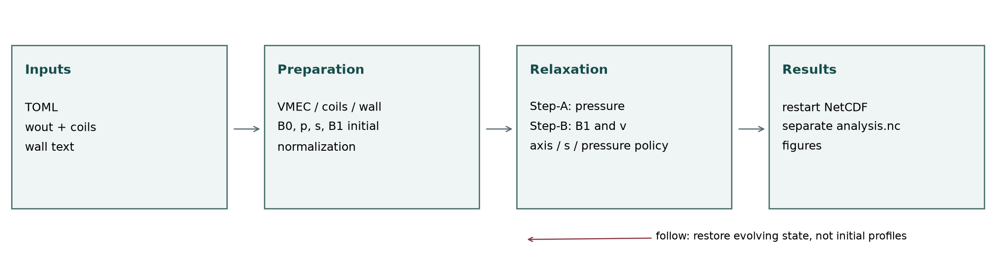

HINT 程序手册
本手册面向 HINT-debug 2.2.0 / HINT-wall 2.2.0 Python 实现。源码由独立的 HINT-docs 仓库维护；本目录只存放通用程序说明、参数模板与文档工具，不记录具体算例。它不是原始 Fortran HINT 的逐参数翻译，也不把历史修复记录当作当前行为。源码快照和文件校验值见版本清单，章节末的源码链接固定到该快照。
两个版本都从 VMEC、线圈文本 和第一壁文本构建统一数据，使用无磁面假设的磁力线压力松弛和电阻形式磁场松弛，输出一个可续算的 NetCDF。主要区别是磁场/速度约束的位置及对应离散算子。它们不是完整输运程序，也不是时间准确的实验放电模拟器。
| 选择 | HINT-debug | HINT-wall |
|---|---|---|
| 磁场与速度边界 | R–Z 矩形计算域 | 用户提供的第一壁 |
| 第一壁之外 | 至矩形边界仍演化 B₁、v；压力/电流源受壁限制 | 仅为几何/差分延拓，不作为外部演化区域 |
| 外部电阻率 | solver.step_b.eta1 |
不接受 eta1 |
| 每个 RKG 阶段 | 矩形电动势及B增量闭合 | 第一壁B虚点与相容散度算符 |
| B 增量相容约束 | 矩形电动势闭合 | 每个 RKG 阶段的法向与散度相容约束，内部迭代预算至少 max(400, 4×最大网格维数) |
| 相同功能 | VMEC/zero 起点、压力策略、TOML、NetCDF、CPU/GPU、JAX、MPI、后处理 | 同左，但离散边界成本不同 |
选用依据：要比较原版矩形边界逻辑，选 debug；要研究静止理想第一壁法向磁通冻结的平衡，选 wall。二者都不能不加说明地称为“无限空间自由边界”或“电阻壁模型”。
导读
- 首次运行：安装 → 输入几何 → 初始化与续算 → 主程序参数。
- 检查物理：方程与归一化 → 源项和 s → Step-A/B → 边界 → 收敛诊断。
- 查看结果：NetCDF 与 IPO → 后处理参数 → Python 绘图接口与变量表。
- 开发维护：加速与资源 → 验证与局限 → 源码地图和文档重建。
“默认值”均指当前配置类的默认值，不是推荐网格或可直接运行的算例。nr=0、空路径、轴位置 R=0 等占位值会在 initial 合法性检查时被拒绝。示例 TOML 仍需真实输入文件和几何。
本网站公开访问，也可离线阅读；不依赖在线脚本或字体，数学公式已转换为本地 HTML/MathML。源码仓库仍为私有，源码链接仅对获授权的 GitHub 用户可用。
一次计算的数据流

图为程序逻辑示意，不是性能占比或实验装置图。follow 直接从统一结果恢复状态，不重新用初始化数据覆盖演化后的 s、压力或响应场。
安装与运行
环境与安装
Python 3.11 或更新版本；当前依赖下限包含 NumPy 2、SciPy 1.14、netCDF4 1.7.2、JAX 0.5、threadpoolctl 3.5。实际解析结果取决于平台。MPI 的系统库/启动器以及 CUDA 驱动不是 pip 自动配置的集群资源。
git clone git@github.com:Yihui-L/HINT-docs.git
cd HINT-docs
python3 -m venv .venv
source .venv/bin/activate
python -m pip install --upgrade pip
python -m pip install './HINT-debug[plots,distributed]'
# 另一版本：python -m pip install './HINT-wall[plots,distributed]'
GPU 路径按驱动兼容性选择包内 extra，例如 ./HINT-debug[jax-cuda12,plots,distributed] 或 jax-cuda13。native/gpu 使用 gpu-cuda11 / gpu-cuda12 的 CuPy 路径，不要同时安装多个互相冲突的 CuPy CUDA 包。内置 VMEC 响应场算法不需要额外安装 virtual-casing，也不再提供空的 vmec extra。
私有仓库需使用用户自己的 GitHub SSH key 或授权凭据；不要把口令、token 写进 TOML、Notebook 或脚本。多节点运行要求每个节点看到一致的代码、环境和输入路径。
最小文件隔离
work/
source/HINT-docs/ # 源码
environments/ # 虚拟环境，可在其他位置
cases/my-case/
main.toml
follow.toml
post.toml
inputs/wout_case.nc
inputs/coils_case.txt
inputs/vessel.txt
run/ # 结果、日志
figures/ # PNG，不混入源码
相对路径以 TOML 文件所在目录 为基准，不以当前 shell 的工作目录为基准。安装成功不意味着输入几何通过校验。
主程序和后处理
hint-debug main.toml
hint-debug follow.toml
hint-debug-post post.toml
# wall 对应 hint-wall / hint-wall-post
没有 Slurm 时可以使用 shell 后台或 screen/tmux。以下启动命令只运行一次，不包含自动重启策略：
mkdir -p run
nohup hint-debug main.toml > run/main.log 2>&1 &
echo $! > run/main.pid
tail -f run/main.log
停止前确认 PID 对应本次任务。若有 MPI 子进程，按作业/进程组管理，而不是只杀一个任意 Python 进程。不要同时对同一个结果启动 initial、follow 或写入后处理。
MPI 示例：mpiexec -n 4 hint-debug main.toml。这只演示启动语法，不代表四个 rank 对任意 GPU/网格都更快。GPU 必须合理绑定设备；多节点由启动器/调度系统分配主机，程序不会自行申请资源。
推荐准备顺序
- 确认 wout 的 nfp、对称性、自由边界平衡及物理剖面，保留其生成信息。
- 核对线圈周期/对称性、闭合点序、带符号总电流和参考电流密度。
- 准备严格包围初始 LCFS 的真实壁，并使矩形域留足壁外网格余量。
- 选 debug/wall、zero/vmec、scale_after，再设网格、时间步和保存策略。
- 阅读启动诊断：几何残差、平滑核心线圈场散度、原始 VMEC 响应场/LCFS 跳跃和边界误差。初始化不投影修正 LCFS 磁场。
- 按完整 checkpoint 评估力、速度、散度和轴闭合，不仅看日志是否继续输出。
文档内提供debug 输入模板和wall 输入模板的源码原样副本。它们只演示参数格式，不包含装置数据或运行结果。
物理模型与归一化
哪些量在演化
采用柱坐标 (R,φ,Z)，网格数组轴序为 (R,Z,φ)，矢量分量顺序为 (R,φ,Z)。两者不能混淆。B₀ 是线圈背景场，B₁ 是全部等离子体响应场：
本章未特别标 SI 的方程均为程序归一化形式，因而安培定律没有 μ₀。SI 电流为 curl(B₁)/μ₀。响应场包含 VMEC 初始响应场及其后续变化，不仅指“相对 VMEC 的新增量”。
稳态目标是静态 MHD 力平衡、压力沿磁力线一致、磁场无散：
程序将它们分为两种松弛：Step-A 沿磁力线平均压力；Step-B 固定该次压力，直接推进速度和响应磁场 B₁。
$\frac{\partial\mathbf B_1}{\partial\tau}=\nabla\times[\mathbf v\times\mathbf B-\eta(\mathbf J_1-\mathbf J_{\rm net})]+k_{\rm divB}\nabla(\nabla\cdot\mathbf B_1).$
C 是数值松弛预条件系数；ν 是黏性；η 是电阻形式的松弛系数；正的 kdivb 是原版已有的散度扩散系数，默认1e-4。当前不求A，不在初始化修正LCFS。Jnet 是维持环向电流的外加平行电流目标，不是另一个应与 J₁ 相加的真实等离子体电流。
模型中没有完整密度连续方程、温度/能量输运方程、速度对流惯性项、旋转平衡驱动、可演化外部线圈电流或有限电阻壁电流方程。因此输出 v 是松弛速度；“几秒弛豫时间”不能直接解释为真实装置的输运时间。
归一化标度
当前代码取 L_ref=(R_min+R_max)/2，B_ref 为准备后的 B₀ 在网格中央索引 ((nr-1)//2,(nz-1)//2,0) 的模，密度参考值固定为 1 kg/m³。B_ref 不是磁轴场强。当前线圈有限截面模型不再使用场强限幅。
| 数量 | 归一化量乘此标度得到 SI |
|---|---|
| 坐标、弧长 | L_ref，m |
| 时间 | t_ref，s；仍为弛豫时间 |
| B / v / p | B_ref / v_ref / p_ref |
| J | B_ref/(μ₀ L_ref)，A/m² |
| 力密度 | B_ref²/(μ₀ L_ref)，N/m³ |
| div B | B_ref/L_ref，T/m |
| 电阻率 | μ₀ L_ref v_ref，Ω·m |
| 运动黏性 | L_ref v_ref，m²/s |
| 体积分能量 | B_ref² L_ref³/μ₀，J |
归一化 η=0.001 不是 0.001 Ω·m。原版日志、Step-B 存储诊断和后处理 SI 数据必须先对齐标度与统计区域，才可比较数量级。
哪些约束“天然满足”
| 关系 | 当前实现 | 仍需注意 |
|---|---|---|
| B=B₀+B₁ | 直接代数定义 | B₀固定，直接采样平滑核心线圈积分；不施加响应边界 |
| J₁=curl B₁ | 由离散旋度计算，无独立 J 演化 | 安培关系成立不意味着电流足够准确；导数放大误差 |
| div B=0 | 不是B状态的代数恒等式；kdivb扩散B1散度 | 初始跳跃、边界、差分截断及固定B0误差需分别检查 |
| B·grad p=0 | 有限长度双向平均近似 | 开放线、随机区、积分误差、压力壁闭合不保证精确为零 |
| J₁×B=grad p | 需要实际松弛收敛 | 黏性、滤波、轴压反馈、固定边界可能留下残差 |
| v→0 | 是有意义的静态验收目标 | 不能仅凭速度变化小判断已经 v=0；非零稳态可能由残余力和耗散平衡 |
scale_after=false 去掉一项外部压力反馈，但不新增能量守恒或保证所有例子最终静止。磁拓扑、源电流、边界和稳定性仍决定能否达到静态平衡。
源码：归一化、Step-B、差分算子。理论背景为 Suzuki 2006 / 2017；当前实现包含另外的离散修复与边界约束，不宣称是论文每个选项的完整复现。
VMEC、线圈与第一壁
wout 的角色
VMEC 用嵌套磁通面坐标表达平衡。本程序从 wout 读取傅里叶几何、nfp、对称性、压力、电流信息，并将它们转换到柱坐标网格；HINT 后续不再要求这些磁面保持存在。
几何使用 cos/sin 傅里叶展开；非仿星器对称平衡保留相应非对称系数。VMEC 半网格磁场系数在径向插值时排除轴上占位项，奇 m 模按 sqrt(s) 的轴正则性处理。径向插值使用程序封装的插值策略，几何角向导数由傅里叶展开解析计算，不用随意差分 wout 表格。
VMEC 逆变基矢场转换到物理柱坐标分量：
这就是不能只用某个面的 dI/ds 推出该面所有点电流矢量的原因：还需要三维几何、完整平衡场及其导数。
压力源采用 wout presf 表；lambda 源采用 jdotb/bdotb，不把 ac 多项式直接当作局部电流密度。VMEC 中用于直磁力线坐标的 λ 与本程序平行电流形状 λ 同名但物理含义不同。
线圈文本与全装置补全
新 initial 输入弃用 mgrid；paths.coils 提供 .txt/.dat 文本，头三行为 HINT_COILS 1、nfp N、stellarator_symmetric true/false，不使用等号。随后每块为 coil 名称 总电流_A stellarator/periodic/updown/none、多行 XYZ 米制坐标、end。闭合曲线至少八个独立点，末点重复首点。正电流沿点序方向，负电流反向。
每条线圈可独立选择三种对称生成规则：stellarator 同时补全仿星器伙伴和场周期旋转，periodic 仅补全场周期旋转，updown 仅做 (x,y,z)->(x,y,-z) 且保持点序和电流符号不变，不做环向复制。典型 PF 线圈是完整环向圆环，本身轴对称，因此“不做环向复制”不等于破坏场周期性。none 表示所有实例已经显式提供。无论哪种规则，补全后的完整电流集合仍须满足文件声明的全局周期性和仿星器对称性；不能把任意不具周期性的线圈放进单周期计算域。
stellarator 表示半周期代表线圈，先按 (x,y,z)->(x,-y,-z) 且 I 变号生成镜像，再旋转补全所有 nfp 周期。periodic 只旋转，none 不复制；后两种覆盖方式必须在补全后仍满足整个装置的对称性。自对称复制只计一次，不同输入块生成同一物理线圈则报错。提供的是整条闭合线圈，不是裁切到半周期的开弧。线圈、壁、wout 的周期和对称性必须一致。
文件电流是该曲线代表的总有效电流，不再额外乘匝数、电流组倍率、场周期数或全局 scale。完整格式见 线圈协议。
平滑核心与无散磁场
vacuum.current_density_a_mm2 是必填的模型电流密度，不是超导材料 Jc。由每个非零电流计算
当前使用近似的平滑核心线圈模型，不再对均匀硬边界圆截面做昂贵体积分：
A(x) = mu0/(4*pi) sum I integral dl'/sqrt(|x-x'|^2+a^2)
a = sqrt(abs(I)/(pi*J_ref*1e6))
局部无限长直导线极限下，J(rho)=Ia²/[pi(rho²+a²)²]，中心密度绝对值为 J_ref，总电流仍为 I；a 是平滑核心尺度，不是工程截面半径。场在核心内有限，远离核心恢复丝状场。模型中的 B = curl(A)，当前初始化直接计算每段 B 的解析积分；周期样条中心线逐级细分，通过 B 的变化检验精度。全体线圈段共同批处理，不再逐线圈做近场修正。该近似由源模型明确给出，不对最终磁场逐点限幅。模型误差、中心线离散误差和 HINT 网格插值误差需区分，严格无散并不能保证磁面完全正确。
网格直接采样平滑核心的解析 B 积分；离网格按 solver.magnetic_interpolation 选择插值器：默认 component 为分量三次插值，不施加无散约束；rbf 为耦合无散向量 RBF。连续源模型无散不意味着采样网格四阶差分或分量插值的散度为机器零。节点值不投影、不平滑，插值后另行检验场值误差及 JAX 自动微分散度。JAX 对实际选定的插值函数求导，不能把该结果混同于源模型解析散度。壁只选择诊断范围，不参与真空场加权、裁剪或边界投影。quadrature_tolerance 默认 1e-5，不等于插值误差或散度阈值。
壁文本协议
所有壁信息在一个文本中，当前主程序不要求用户先生成壁 NetCDF：
HINT_WALL 1
nfp = 3
stellarator_symmetric = true
toroidal_planes = 4
poloidal_points = 64
DATA
# 每行 phi_rad R_m Z_m；此处仅说明布局，不是完整壁数据
DATA 后必须有 toroidal_planes*poloidal_points 行，按平面优先排列。同一平面所有行的 φ 相同；R>0，数值有限，使用 e/E 浮点指数而不是 Fortran D 指数。支持 # 注释和空行。不要把注释布局示意当作完整可运行壁。
| 壁类型 | φ 数据范围 | 端点处理 |
|---|---|---|
| 轴对称 2D | 单平面，φ=0 | 一个闭合 R–Z 轮廓 |
| 仿星器对称 3D | 0 到 π/nfp，均匀，至少 4 平面 | 包含两端，端面对称一致；内部补为一场周期 |
| 非对称 3D | 0 到 2π/nfp，均匀，至少 6 平面 | 包含末端且与首端逐点闭合，内部去掉重复平面 |
极向每平面至少 4 点，不重复首点作为末点；各平面对应点需表示同一极向序列，方向一致。建议角度保留约 17 位有效数字。壁 nfp 必须等于 wout，壁对称性必须等于 not lasym，不能由文件名猜测。
主程序检查 LCFS 严格在壁内、壁严格在矩形域内，并要求壁外至少配置的网格层余量。壁几何生成 signed distance（正值在内）、外法向、有效掩膜，写入统一结果。即使 debug 的磁边界在矩形上，真实壁仍参与压力、源项支撑区域和后处理可用区。
压力、电流源与 s 标签
压力不是固定的三维源场
初始 p(s) 来自 VMEC（或 input 的同样升幂/分段线性定义），在柱坐标网格赋值。之后 Step-A 沿当前磁力线松弛压力，s 也根据当前压力和磁场重建。因此最终同一空间点的压力、s 和电流源都不必等于初始 VMEC 值。
profiles.pressure_scale 是准备阶段的倍率；solver.scale_after 决定攀升后是否保留轴压反馈；输出 pressure_scale 是记录的攀升进度。三者不相同。
zero 起点
B₁=0、v=0。初始压力是整个目标剖面的缩小版本。小压力尺度由真空磁轴处 beta=10⁻³ 对应的压力与目标值取较小者：
当 a₀>0 且小于 1 时，每个外迭代的目标比例按几何因子 a₀^(−1/N) 提高，N=pressure_ramp_iterations，到达 1 后停止攀升。初始和随后反馈以插值的当前磁轴压力为依据作统一倍率修正。零目标压力的退化情形不应用这个比例公式直接相除。
攀升改变整体幅度，不把每个网格的 p 强行重置回初始 VMEC p(s)。在变化后的磁结构、标签分布下，压力形状会继续变化。只保证执行所选的轴压反馈，不保证每一个原磁面的 p 值或全空间单调性。
vmec 起点
start_point="vmec" 要求 profiles.source="vmec"、profiles.pressure_scale=1。初始直接使用完整 VMEC 压力和重建的等离子体响应场，v=0，不再将初始压力缩小。pressure_ramp_iterations 在物理流程中不起作用。
scale_after=true：从后续完整外迭代起，仍把当前轴压统一反馈到目标值。scale_after=false：不再施加目标轴压反馈，压力由现有 Step-A/B 和边界流程继续演化。
false 不会取消每步的磁轴定位，也不会停止 s 重建；它不是切换为完整绝热/等温输运方程。原 VMEC p(0) 与离散网格最大 p 未必精确重合。
电流源的实际定义
wout 的 jdotb/bdotb 给出上述形状；该比值在 SI 下量纲 A/(m²·T)。在本程序中其整体幅度由 ctor 再归一化，输入形状的共同倍数会消去。当 profiles.source="input" 时，profiles.current 用相同的 lambda 形状，不是 jcurv，也不是 I(s) 或 dI/ds。这比“所有 VMEC ac 与 HINT input 完全同义”更严格：这里只共享升幂多项式的数学表示，因变量须按 lambda 定义转换。
每个 Step-B RKG 阶段根据当前 B、冻结于本次 Step-B 的 s，在壁内 0≤s<1 建立源项并按 φ=0 截面总电流调整幅度 α_J（不是磁矢势 A）：
该积分是环向电流穿过 R–Z 截面的通量，没有 R 权重或 2π 因子。分母严重正负抵消时不能安全归一化，代码拒绝近退化归一化。源电流不乘压力攀升比例。
电阻项是 η(J₁−Jnet)，体现维持平行净电流的驱动。J₁由完整响应场的旋度决定，还包含力平衡所需的横向/其他电流成分。不能据此认为 J₁在每点完整地趋于 Jnet，也不能把 Jnet+J₁作为总等离子体电流。
演化中的 s 如何定义
初始 norm_s_initial 是 VMEC 归一化环向磁通。演化的 s 是压力排序所重建的标签，不需要预先识别每一张闭合磁面：
- 在 φ=0 截面、壁内且排除矩形两层差分保护节点，选 501 个压力层，范围为 0.01 p_axis 到 p_axis。
- 对每个压力阈值 p_k，积分满足 p≥p_k 的区域内的 Bφ dR dZ，得到包围该高压区域的环向磁通标签。
- 以最低压力层包围的磁通归一化，轴端设 0、边端设 1，施加单调累积约束。
- 通过压力到标签的插值给三维点赋 s；低于压力底层取 1，高于轴压取 0。
实现采用排序、累积和及二分索引，避免对每个压力层重复扫描全域。0.01 乘的是压力底层阈值，不是 s=1 处磁场的倍率。它沿用模型的低压边界标签约定。
在磁岛、随机区或压力平台，s 不再是唯一、严格的磁通面坐标。图上的 rho=sqrt(s) 也只是该标签的变换，不是独立几何小半径。保存态中的 s 应作为后处理和 follow 的依据，不能用 norm_s_initial 覆盖。
FIELDLINES 初始化与续算
初始场的定义
2.2.0 直接演化 B，不演化 A。设 B₀ 为完整线圈集合的平滑核心场，V 为外部 B virtual-casing 积分：
LCFS内不再叠加一次真空场；内侧响应是wout总场减B₀，外侧响应来自B边界积分。这与 FIELDLINES 的区域逻辑 一致。LCFS恰好落在网格点上时取wout侧。当前不求A、不投影、不混合、不平滑初始跳跃，不调整线圈场来匹配wout。
压强直接使用presf在初始VMEC标签处的值，v=0，攀升已完成。初始化立即写入outer_step=0，先于第一次轴搜索、Step-A和Step-B。scale_after控制之后是否维持目标轴压。
源积分与加速
外向面元dS、r=x-y的B积分核为：
源面覆盖全环面，不额外乘nfp、电流或mu₀。减去局部常向量的密度正则化保留外部积分值，16/24点高斯对与局部细分估计误差。该估计不包含wout、线圈、坐标反解和HINT网格误差。
仅外侧目标执行casing；内部用批量wout Fourier计算。CPU管理自适应队列，JAX CPU/GPU驻留面片和源系数，MPI分配R-Z块。没有规范路径积分或B到A逆求。
LCFS诊断，不做修正
日志在64个表面探针上报告外侧B₀+V与wout场的法向差、矢量差、wout自身Bn及积分误差估计；另报内域B₀+B₁=Bwout的代数保真度和所选插值器在原网格节点上的 JAX AD 散度。不额外用有限差分检验散度精度。小积分误差不保证边界两侧一致。
后续 kdivb 扩散响应场的离散散度，不清理固定 B₀。保留 LCFS 节点跳跃不等于承诺它一定在有限次迭代后消失。默认分量插值优先速度，不保证无散；可选 RBF 保持输入节点值，并在节点之间构造连续无散场。两者均不修改已经保存的 B。
follow
paths.output_file同时是输入与追加目标。只接受同版本schema 21，恢复B₀、当前B/p/v/s、初始冻结B₁参考、轴热启动、攀升状态和每记录求解设置。未指定的数值控制继承；不能改变start_point。无需外部wout、线圈或壁文件。
不得用初始s覆盖当前s，不重算初始化，不重启已结束攀升。旧A-state或更旧B-state不自动升级。分支续算请先复制停止写入的完整结果，再让follow指向副本。每个结果只能有一个写进程。
外迭代与数值方法
一次完整外迭代
| 顺序 | 更新内容 | 冻结/依赖关系 |
|---|---|---|
| 1 | 边界闭合、压力有效域 | 对当前B1/v施加既有边界闭合，p施加壁支撑 |
| 2：Step-A | 沿当前 B 的双向磁力线平均 p | B 固定；不重新读取初始压力剖面 |
| 3 | 定位该场磁轴、测量松弛后轴压 | 热启动，但不能把旧轴直接当成新轴 |
| 4 | 由 p 和 B 重建 s | 压力排序/磁通积分 |
| 5：Step-B | inner_steps 次 RKG，推进 B₁、v | 本次 p 和 s 固定；J₁/B/Jnet 随 RKG 阶段变化 |
| 6 | 在更新后的 B 中再次跟踪轴 | scale_after=false 也执行 |
| 7 | 按攀升/维持策略统一缩放 p（若应执行） | 不恢复旧 s；false 且已完成攀升则不缩放 |
| 8 | 保存完整状态及可用诊断 | 内部诊断和结束反馈后的状态时刻不同 |
Step-A 双向平均
两个方向独立追踪；出壁/失败方向贡献零，另一个方向仍保留其自身平均。不是把两方向积分的分子分母分别相加再求比值。若两侧积分权重不同，这两种离散平均并不等价。
沿线快速压力均衡是模型假设，有限追踪长度、开放线处理、权重及积分误差共同决定近似质量。JAX 路径使用自适应 Dormand–Prince 5 和 FSAL，native CPU 使用 SciPy DOP853。试探步越壁时先缩步重试以区分真实穿壁和粗步越界；最终失败需结合诊断解读，不伪造一条闭合线。
空间差分
内域一阶/二阶导数采用四阶五点中心模板：
φ 周期环绕；B/v的R/Z边界使用对应版本的闭合，物理内域为四阶中心差分。柱坐标散度按守恒组合：
旋度的 R/φ/Z 分量分别为 Dphi(BZ)/R−DZ(Bphi)、DZ(BR)−DR(BZ)、DR(RBphi)/R−Dphi(BR)/R。速度黏性采用柱坐标矢量拉普拉斯，包含曲率和分量交叉项，不能对三个分量简单套笛卡尔标量拉普拉斯。
规则内域四阶并不等于三维扭曲壁附近整体四阶；壁的距离、法向、插值和 ghost 延拓另有误差。
离网格插值及其检验
全部离网格磁场采样由 solver.magnetic_interpolation 选择。默认 component 使用原版每分量四点三次 Lagrange 插值，优先速度，明确不要求保无散；不会因其 AD 散度非零而投影或终止。rbf 优先保无散，使用耦合向量 RBF，不求 A，也不是三个标量 RBF。逻辑坐标中的 Piola 场为 U=a(RBR/dr,RBZ/dz,Bphi/dphi)，a=dr/mean(R)，其物理散度为 div(U)/(a*R)。核 K=(-Delta I+grad grad^T)psi 使用支撑半径为6个网格间隔的 Wendland C6 标量核，每列严格无散。低阶多项式与周期 Fourier 趋势项同样构造成无散形式，再用 RBF 拟合剩余节点误差。原始节点 B 不覆盖、不投影；系数通过带真实残差复核的预条件共轭梯度求解。
矩阵乘法使用精确的紧支撑 FFT 卷积，R/Z补零而非周期延拓，只有phi周期。CPU线程、JAX CPU/GPU、MPI设备网格共享同一方程；固定网格算子缓存、上一状态系数热启动，追踪时系数常驻设备。RBF需要全局系数求解；精确排除支撑恒零项后每点候选项由1728减少到1256，不改变核或非零贡献。分量插值每点仅64个节点，无全局拟合。
初始化分别输出真空场和响应场在原网格节点上的实际插值器 JAX Jacobian，含壁内和全域采样，采用 mean(h*abs(divB))/mean(abs(B))，并列最大值、RMS和分位数。每个外迭代的三种场 AD 统计单独写入.nc文件。主程序不使用有限差分单独检验磁场精度；Step-B的divb诊断同样为原网格节点上的所选插值器 JAX 导数，不代表网格差分残差。solver.step_b.kdivb=1e-4、旋度、边界闭合及可选演化投影仍使用原来的离散算子。RBF的小散度是构造约束，不能证明场值、磁面或力平衡正确。线圈独立场值比较与节点保真度继续报告。
wall响应场RBF仅将物理点及有效ghost节点作为约束，壁外占位零值不参与拟合；分量插值仅为超出有效ghost的模板支撑做局部线性外延，不改变物理/ghost值；真空场插值不依赖壁。follow以恢复的当前B及保存的插值器选项重建。有限差分ghost反射是边界方程，不是离网格磁场插值，仍按原模型执行。
Step-A压力保留周期三次插值，输出p/s及壁距离采用有界/线性方法。速度不存在不可压约束。见“离散系统、插值与一致性”。
Step-B 时间推进
使用四阶段低存储 Runge–Kutta–Gill。对 u=(v,B₁)，每阶段先计算 δu=Δτ·RHS(u)，然后：
| 阶段 | c₀ | c₁ | c₂ | c₃ |
|---|---|---|---|---|
| 1 | 1/2 | 0 | 0 | 1 |
| 2 | 1−√(1/2) | −1 | 1−3c₀ | 2c₀ |
| 3 | 1+√(1/2) | −1 | 1−3c₀ | 2c₀ |
| 4 | 1/6 | −2 | 0 | 0 |
每阶段直接更新B1和v，使用基线B版本的电动势/磁场边界闭合与kdivb项。此形式推进的是人工松弛方程；压力分裂、滤波、投影和边界闭合使得“RKG 四阶”不能直接推导整套外迭代的四阶时间误差。
预条件和滤波
C 的场因子是 min(1,(Bcrit/|B₀|)²)；电流指标来自 curl(B₀)，小于 j_low 因子为 1，大于 j_high 为 0.1，中间线性过渡。合成后执行配置的邻域平滑。它不是对 Jnet 或 J₁ 作削顶。
速度滤波针对相对参考场的增量，五点邻域值为 (−f[-2]+4f[-1]+4f[+1]−f[+2])/6，以 mfil=0.375 混合。reference_every 只是更新滤波参考，不将 v 清零。它仍是一种数值耗散，不能因删除了旧 nvreset 就视为速度完全没有额外处理。
当前时间步固定，无通用自适应 CFL 控制。增大 inner_steps 延长松弛区间，不会修复过大 time_step 导致的不稳定。细化网格后，显式扩散约束通常更严格。
两种边界与直接B闭合
两套版本的真空场B₀固定且完全穿透壁，不参与响应场边界条件。零启动冻结B₁·n=0；VMEC启动冻结初始非零法向分布：
debug：矩形R-Z边界
恢复B演化基线的两层R/Z守卫行，法向增量为零，切向分量按原有外推闭合，速度为零，环向周期。第一壁终止磁力线并限制压强/源电流区域，不是磁场边界。壁外仍推进数值松弛变量；eta1=0表示沿用eta0，不是无限真空的Maxwell解。
wall：三维第一壁
第一壁是演化边界，只推进壁内物理区，使用子网格距离/法向和虚点闭合。没有eta1。仿射参考提升使虚点闭合作用于相对初始场的变化，避免把VMEC初始法向场压成零。初始参考不从洛伦兹力中扣除，J₁仍是完整curl(B₁)。
保留B基线中每个RKG阶段的旋度增量相容约束：用体积内积下的最小修正保持齐次法向条件和增量散度。它与可选的完整状态投影不同，iterations=0不会关闭该增量约束；内部预算至少max(400,4*最大网格维数)。这不在初始化执行，失败则报告，不伪造通过。
较宽的B插值支撑可能触及未计算外部节点。仅对响应场的这些占位支撑，从有效物理/虚点延拓辅助磁通；不改变已保存数据或边界，不对真空场使用壁权重。该延拓近壁较低阶，不能据此宣称全域四阶。
散度控制
这是连续内域关系，前提是感应旋度项的散度为零。实际边界和离散误差仍须检查。可选演化投影默认关闭，不在初始化执行。两者都不是开放空间匹配边界；debug需检查箱体尺寸，wall需考虑冻结壁通量的物理约束。
加速、并行与资源
CPU/GPU是硬件，JAX是编译/数组执行系统，OpenMP是共享内存线程API，MPI是进程通信标准，Open MPI是其实现之一。这些不是同义词，也不是线程数越大利用率越高。
| 环节 | 当前执行 |
|---|---|
| 全线圈平滑核心B | 共享源线段，CPU批量线程/GPU JAX、MPI目标分区 |
| VMEC内部B | 批量Fourier和径向数据求值 |
| LCFS外B casing | JAX驻留基础/细分源面片、MPI R-Z块轮转分配 |
| 自适应控制与根求解 | CPU，适合的点批量送JAX |
| 磁场插值设置 | 默认分量插值无需全局求解；可选无散向量RBF使用全局FFT-PCG、CPU/GPU/JAX及MPI设备网格、算子缓存与热启动 |
| Step-A | MPI起点分区、JAX DOPRI5批量追踪，native DOP853参考 |
| Step-B | JAX分片数组、缓存编译RKG块、缓冲区复用 |
| 后处理 | MPI种子、CPU/GPU JAX批量采样/追踪，CPU画图 |
| 文件 | rank0读写协调 |
初始化不再执行内部A/规范路径，不对每个Step-A求B到A逆问题。仅外部点进入VC积分，内域直接读取wout场。规则尺寸填充、FSAL、源缓存等优化不放宽精度要求。
自适应积分面片继续在JAX设备上由VMEC Fourier系数生成，并写入驻留缓存，避免源节点在GPU和CPU之间往返。自适应误差判断和任务调度仍由CPU执行，不能称为全设备端算法。初始化日志记录各rank计算时间、负载不均衡、设备生成/上传面片数，以及包含诊断的总耗时。LCFS和RBF/JAX散度诊断点按rank分区；额外诊断失败只写日志，不丢弃已计算场，但源数据无效或实际积分未收敛仍会明确报错。
RBF设置需要全局系数求解。小规模CPU/BLAS趋势拟合、精确补零FFT矩阵乘法及预条件器复用，配合上一状态系数热启动；追踪时保留设备系数。2.2.0精确裁掉恒为零的支撑点，候选数从1728降到1256；不缩小核、不降低精度。独立JAX求值缓存编译，AD求导同时返回B，避免重复求值。不可变真空场的每外迭代统计缓存复用，响应场采用前次系数热启动；MPI按节点分配诊断工作。分量插值无需拟合，每点64节点，GPU使用更大的8192种子批次，RBF限制为1024以控制内存。局部求值成本不能直接换算为整个Step-A或完整运行的加速比。
后处理使用数值缓冲区Gatherv，仅向输出rank收集轨迹。庞加莱只保留截面点，不省略其间积分或误差控制；旋转变换所需的完整角度采样仍然保留。失效磁力线以掩码留在固定尺寸批次中，减少反复JIT编译。Notebook在同一只读记录内复用磁场插值器、设备系数和有限数量的截面数据，换记录时清空缓存。
主程序多rank需engine=jax；native主程序仍为单进程参考。用户用mpiexec显式启动，推荐每GPU一个rank，避免多rank争抢同GPU。线程预算取决于亲和性/调度/cgroup；支持的数值库线程池限制过度订阅。并非每一个Python循环都由OpenMP执行。
JAX初始化需先设置闭包常量处理选项，CLI自动完成。多节点仍需用户正确配置通信网络、MPI和JAX环境。单节点多rank功能正确性不等于多节点扩展性已经验证。
测量应同步GPU输出，区分首次编译、预处理、暖态迭代、I/O。报告实际CPU占用、GPU利用率、MPI ranks和线程预算，不能把空闲线程计入有效并行量。参见执行说明及JAX异步机制。
NetCDF 与 IPO 管理
输入 → 过程 → 输出
| 任务 | 输入 | 输出 | 是否需要外部 wout/coils/壁 |
|---|---|---|---|
| initial | main.toml + wout.nc + coils.txt + 壁文本 | 一个统一 equilibrium.nc + stdout 日志 | 都需要 |
| follow | follow.toml + 已有统一结果 | 向同一文件追加完整状态 | 不需要；使用内嵌准备数据 |
| 数值后处理 CLI | post.toml + 统一结果 | 独立 analysis.nc | 不需要 |
| Notebook 绘图 | 统一结果 + Python 调用 | PNG/PDF/SVG，可取得返回数组 | VMEC 叠加需 wout；不需线圈/壁文本 |
3 个旧预处理程序已整合进 initial。用户不再手工衔接 flx/vac/lim 三个输出，也不再以旧 NAMELIST 作为新版输入。后处理 TOML 配置的是数值分析内容；它不是所有 Notebook 绘图参数的序列化文件。
统一文件 schema 21
两版各有自己的 schema 属性，不能交叉续算。新状态仅保存必要基础量：
/ R, Z, phi, nfp, B_reference, length_reference, density_reference, alfven_time_reference
/preprocess/flux initial norm_s 与来源
/preprocess/profiles 目标压力、lambda、电流幅度
/preprocess/vacuum/B 固定 B0，T；线圈文本、电流密度、半径、诊断
/preprocess/wall mask、distance、normal、对称性与来源
/preprocess/initial_response_B vmec 初始冻结法向参考 B1，T
/equilibrium/B 每完整记录的总 B，T
/equilibrium/velocity m/s
/equilibrium/pressure Pa
/equilibrium/norm_s 当前演化标签
/equilibrium time、outer_step、攀升状态、轴热启动、配置、完成标记
/equilibrium/stepb_diagnostics 可选内步标量历史
读取B0与总B，以B1=B-B0、J1=curl(B1)/mu0得到响应及电流，不求A。time 是归一化阿尔芬时间；axis_seed_R/Z 是归一化热启动元数据；三维场使用 SI 并不意味着内步标量也自动变成 SI。
同步基础数组后发布完整标志。不完整记录跳过。B0与初始B1参考只存一次；后者不能被当前B1覆盖。初始化未迭代状态立即写入outer_step=0。插值系数、J、grad(p)及力残差可重建，不重复保存。
Step-B 的 divb 字段为所选插值器的 JAX AD 采样诊断，不是网格差分散度。新增 /equilibrium/magnetic_diagnostics，独立于 save_every 和 store_stepb_diagnostics，保存第0步及每个外迭代的真空场、响应场和总场统计量，不保存三维散度场。变量命名 divb_ad_<vacuum|response|total>_<mean_abs|mean_normalized|rms|max|sample_count>，绝对统计量单位 T/m，归一化指标无量纲，采样范围为壁内最多1024个固定原网格节点。max 是采样最大值而非全空间上界。记录还含 outer_step/time/interpolation/sample_complete。诊断失败以 NaN 和采样数0表示并写日志，不中止演化。follow 会使超出恢复检查点的诊断记录失效。
convergence.enabled=true 时后处理输出 magnetic_convergence，直接复制上述记录，不重算磁场。绘图脚本可用 time_series 读取任意 divb_ad_* 变量，也可用 HintPlots.magnetic_history() 读取全部统计。
新主程序 follow 只接受 schema 21 的 B 状态。旧 schema（含1.x的A状态）均明确拒绝，不提供格式升级或兼容读取。后处理需稳定结果或安全副本，不承诺正在写入的 HDF5 可任意并发读。
analysis.nc
数值后处理按内容写入独立文件，包含采样几何、壁信息和 /postprocess/<内容>/run_* 结果。重复分析不直接覆盖输入平衡；每次 run 的完整标志和 latest_run 记录用于识别有效结果。追加时检查来源文件与几何一致性，不能把不同算例悄悄混入一个 analysis.nc。
分析文件当前使用 hint_analysis_schema=1，根组含 R、Z、phi、nfp 和 source_equilibrium；壁距离场在 /geometry/wall/signed_distance。它不是主程序 schema 21 checkpoint，不能将 analysis.nc 当作 follow 输入。
fields 的壁外采样约定为 −1；导数量还提供有效节点掩膜。其他结果可使用 NaN/状态码标识失败。统计时必须尊重 mask/status，不能把 −1 当成真实负场强或把失败轨迹当成零旋转变换。
存储成本与安全
单个 3D 标量 double 原始大小约 8*nr*nz*ntor 字节，矢量为三倍；保存 B、v、p、s 每状态约 8 个标量场，还需坐标/元数据/压缩开销。历史文件大小随保存次数增长，压缩率取决于数据，不是固定保证。
用 save_every 控制完整状态间隔、diagnostics_every 控制标量密度；关闭标量存储会丢失内部步历史。不要仅为释放空间删除仍用于 follow 的唯一结果。异地备份应在完整状态或稳定副本上操作。
收敛性与平均方式
先确定量、区域和时刻
同名“RMS”可能不是同一个统计。比较两版本、原版日志或不同图片前，应固定：B₁还是总 B、SI 还是归一化、矩形域还是壁内、是否排除差分无效节点、每内步还是完整保存态、点平均还是体平均。
令有效节点集合为 Ω，柱坐标体元权重 w_i=R_i ΔR ΔZ Δφ：
绝对平均是对 |f| 求平均，有符号平均可能正负抵消；RMS 与最大绝对值则不会。三者不能互换。统计极值不加体积权重。
Step-B 诊断
| 字段 | 定义/解释 |
|---|---|
| kinetic_energy | 归一化体积分 1/2 ∫v² dV |
| response_magnetic_energy | 归一化体积分 1/2 ∫B₁² dV；不是总场能量 |
| force_max / force_rms | F=J₁×B−grad p 的最大模 / 点 RMS，不含黏性和预条件因子 |
| divb_max / divb_rms | 响应场所选插值函数经 JAX AD 的最大绝对散度 / 点 RMS，最多 512 个原网格采样节点 |
| force_volume_rms | 力残差的 R 加权体 RMS |
| divb_volume_rms | 同一组 AD 采样节点散度的 R 加权 RMS，不是原网格差分残差的体 RMS |
| parallel_pressure_volume_rms | b·grad p 的体 RMS |
| boundary_bn_max | 相对冻结法向参考的最大边界误差，不是绝对 Bn |
| boundary_velocity_max | 适用边界上的速度模最大值 |
力、能量等内域诊断在 debug 中排除矩形保护层，包含数值壁外区；wall 在其有效内域统计。Step-B 内部 AD 散度在 debug 中采样矩形域，在 wall 中只采样壁内。因此两版本的诊断范围可能不同。新增每外迭代三种场的 AD 统计统一采样壁内原网格节点，便于比较。
初始化日志分别列出真空场与响应场在原网格节点上的实际插值器自动微分散度，包含全矩形域和壁内统计。节点处也是对插值函数求导，不是用原网格间距差分，也不是重新计算更细的源场。每个外迭代将真空场、响应场和总场的 AD 统计写入 NetCDF；固定选择最多1024个壁内节点，必须结合采样数理解，不能将抽样最大值称为全网格极大值。平均归一化指标为 mean(h·|div B|)/mean(|B|)，h=min(ΔR,ΔZ,RΔφ)。诊断失败记录日志并使用 NaN，不中止演化。分量三次插值仅分片光滑，恰在节点处 JAX 返回所选模板一侧的导数；不保证保无散。
网格差分与插值器 AD 散度不能直接当作同一指标。当前 schema 21 不读取旧检查点；每外迭代统计同时记录 interpolation，切换分量/RBF时应分别解释曲线变化。分量插值明确放弃保无散要求，较大的 AD 散度不会自动触发场修正或中止。
内部最后一步诊断可能发生在外迭代末尾轴压反馈之前；保存态压力可能已反馈。scale_after=false 不再有该压力倍率，但重新计算导数、掩膜及 SI 换算仍可造成差异。
相对力残差
绘图的局域相对量为：
在分母有效时范围为 [0,2]。两项同时低于相对数值门槛时掩膜，而不是人为给小分母制造很大的比值。它与“所有点绝对残差 RMS 再除全局梯度 RMS”不同：
后一式是另一种可解释的归一化，不能把当前 force_rms 自动称为这个比值。局域相对图在低压真空附近往往无定义，不宜据此说真空不平衡极大。
磁场散度解读
后处理仍可按需计算保存节点上的 D·B₀、D·B₁、D·(B₀+B₁)，并注明网格差分算子。同一线性算子下三者相加关系成立，但插值、掩膜和采样网格改变会影响数值。主程序不再以这些差分值检验场的连续散度精度；演化中的 kdivb 和约束投影仍使用原有离散算子。
RBF 的舍入级散度是插值核的结构性约束，不证明节点差分残差小，也不证明插值场值准确、拓扑正确或已经力平衡。必须独立观察场值保真度、力与速度等指标。
fields/MAGVAL 类输出用 T/m，其相对最大散度指标还乘特征域尺度再除最大场强；这不是 Step-B 的 B_ref/L_ref 归一化。没有给出离散精度、网格和场梯度时，不存在对所有 mgrid 都必须满足的绝对 10⁻¹⁰ 阈值。
如何判断趋于平衡
同时观察力残差、平行压力梯度、速度/动能、响应能量、散度和边界误差，结合晚期变化趋势。v 变化很小只说明近稳态，不说明 v 已趋零；固定非零流速也可能与残余力/耗散平衡。单一残差小也可能来自压力整体衰减，需一起看轴压/峰值及目标剖面。
对 signed 分量使用线性或 symlog；严格非负且跨数量级量适合 log。包含零或舍入噪声的曲线不要偷偷加偏移量。zero 攀升可在第 N 外迭代画垂线；vmec 无攀升，不应套用“第 20 步攀升结束”标记。
后处理与 Notebook
数值 CLI 按内容分类
后处理读取统一结果，selection.record=-1 默认选择最后完整状态；requested_time 提供时选最近完整时间，不做状态插值。至少启用一个内容。
| TOML 表 | 内容 | 关键限制 |
|---|---|---|
| fields | 场采样、导数与磁场指标 | 壁外 −1；导数有效区需额外掩膜 |
| force_balance | 力平衡、梯度、电流等 | 使用响应电流与当前总场；不是重复读初始源项 |
| magnetic_axis | 当前场磁轴 | 保存轴作热启动，并重新验证闭合 |
| field_lines | 普通弧长磁力线及兼容边界模式 | 线性 R–Z 起点序列 |
| poincare | 周期截面交点 | 一个场周期，不是每步都输出完整环向圈 |
| flux_surfaces | 可解析磁面的积分量 | 散布/积分精度不合格需保留失败状态 |
| boundary_trace | 边界曲线追踪 | 内部固定 mode=vmec；名字不表示调用 VMEC 求解器 |
| convergence | 保存的 Step-B 历史 | 无法恢复没有存储的内部诊断 |
输入只接受 fields/force_balance/field_lines 等当前表名，旧 magval/gprts/hmag 别名已删除。共有 HMAGConfig 中某些参数被内容分支覆盖或不使用，完整参数表逐项说明，不建议把所有公共字段都复制到每个表。
追踪圈数的接口差异：CLI flux_surfaces.surface_circuits 按完整 2π 环向圈计，源码乘 nfp 扩展到场周期；CLI poincare.boundary_points 和 Notebook crossings 按场周期回归计。三个量不能直接等值替换。
Python 绘图入口
from hint_debug_plotting import HintPlots, variable_catalog
plots = HintPlots(
"run/equilibrium.nc", # 稳定结果或安全副本
wout="inputs/wout_case.nc", # 可选；叠加 VMEC 时必需
backend="cpu", engine="jax",
)
print(variable_catalog())
wall 使用 hint_wall_plotting。outer_step 与 record 不可同时给出；record 是保存记录序号，不是步号。构造对象不会启动主程序，不修改结果。传入的 wout 需同一算例、周期与对称性一致；仅凭 nfp 匹配仍不能替代用户确认正确文件。
二维截面
figure = plots.sections(
"pressure", levels=48, contour_lines=12,
vmec_surfaces=(0, .25, .5, .75, 1),
)
figure.save("figures/pressure.png", dpi=300)
plots.sections("force_residual_relative").save("figures/relative_force.png", dpi=300)
默认截面 φ=0、π/(2nfp)、π/nfp，纵向排列，contourf+contour、统一色标、壁与矩形边界。角度是弧度。非对称算例也保留这一默认值，查看整周期需显式改 angles。LCFS 是初始 VMEC 边界，不是演化后的 s=1 平台。
show_lcfs=true 需 wout；默认叠加 VMEC 磁轴、三张内部面与 LCFS。壁来自保存的距离场零等值线，不要求再次读取壁文本。不存在可比 VMEC 量时不伪造速度/残差参考。
一维剖面和时间曲线
plots.profiles("pressure", coordinate="s", bins=50).save("figures/p_s.png", dpi=300)
plots.profiles("toroidal_current_density", coordinate="R", z_m=0.0)
plots.profiles("field_strength", coordinate="Z", r_m=1.5)
plots.profiles("speed", coordinate="phi", r_m=1.5, z_m=0.0)
plots.time_series(["force_rms", "divb_rms", "kinetic_energy"], scale="auto")
plots.time_series("speed", reduction="mean", scope="wall")
示例 R/Z 位置必须按装置调整。R/Z 剖面是指定物理线上的采样；φ 剖面覆盖一个场周期，不能再同时给 angles。矢量先插值分量再求模/投影，避免把模的插值误当矢量插值。
s/ρ 剖面用保存的演化标签，按截面等面积分箱，显示平均与箱内标准差，不是体平均或严格磁面平均；ρ=sqrt(s)，分箱仍均匀于 s，s=1 外侧桶排除。±标准差不是数值误差棒。点数不足的箱不强行插值补齐。
wout 压力参考用原始 presf；无 wout 时可用内嵌的缩放后目标压力作有限参考。s 图两套曲线分别用自己的标签，不宣称 HINT s 与 VMEC s 为同一磁面；R/Z/φ 参考在相同实空间位置独立反解 VMEC，不外推到 LCFS 外。
toroidal_current_density 是点值 J₁φ，A/m²；toroidal_current 是标签阈值内 ∫J₁φ dR dZ，A。VMEC 对比用其完整场导数/安培环路积分，不把 jcurv 当局部 Jφ，也不为强行匹配 ctor 再缩放曲线。
庞加莱
result = plots.poincare(crossings=256, toroidal_steps=128)
result.save("figures/poincare.png", dpi=300)
可通过 poincare_data 指定种子和更长追踪，再传 data= 重画。有效种子位于第一壁内，不受初始 LCFS 限制；扩大种子范围/加密可显示外侧磁岛，但空白可能是出壁、奇异积分或取样不足，不应人工连接成磁面。启动种子不冒充回归交点。
旋转变换 iota
data = plots.rotational_transform_data(
seed_s=[.02, .1, .2, .4, .6, .8, .95, .99],
crossings=256, toroidal_steps=128,
rtol=1e-8, atol=1e-10,
convergence_tolerance=.002, surface_tolerance=.02,
)
plots.rotational_transform(data=data, coordinate="s")
先在当前磁场定位磁轴，再连续追踪、展开相对磁轴的几何极向角，计算长程 Δθ/Δφ。命令行和 notebook 均保留此几何约定，叠加时将 VMEC 参考曲线转换到相同约定；是否提供 wout 不会改变 HINT 结果的定义。使用密集自适应 RK4 步长加倍，而非仅凭稀疏庞加莱点 unwrap，以免角度混叠。
默认 32 个初始 VMEC s∈[0.02,0.98]，每个 s、每个环向截面用一个 θ=0 起点。是同一条磁力线的长程绕转平均，不是同 s 多起点平均。可加密 seed_s；但随机区里长程绕转存在也不意味着严格磁面存在。
返回有限长度前后半段一致性、角度分辨、表面散布等标志；未通过的有限值用区别标记，失败值掩膜。坐标轴默认 HINT 的起点演化 s/ρ；不能误标为初始 seed_s。发布结果时应单独记录起点、追踪圈数、步长、插值器和筛选准则。
输出和变量
HintPlots.from_toml("post.toml", wout="wout.nc") 复用数值后处理的输入路径、记录/时间选择优先级和计算后端。随后无追踪参数调用 plots.poincare()，按启用的 [poincare] 配置调用相同数值引擎再画图。额外指定追踪参数则代表显式 notebook 探索，不会修改 TOML。
同一记录的插值器、设备系数和有限数量截面数据会缓存，重复调整图形样式不重复插值；切换记录不复用旧场缓存。如用户自行修改内存中的物理数据，必须调用 plots.clear_cache()。庞加莱在设备内计算完整子步，仅回传截面点；MPI 使用数值缓冲区汇总到输出进程，失效轨迹采用固定形状掩码避免重复 JIT 编译。
各绘图方法返回 PlotResult(figure, axes, data)，.save() 支持 PNG/PDF/SVG；不用图时也可读取 field/section/line/point/temporal。Notebook 不自动创建 analysis.nc。绘图可用变量名、单位和适用功能由源码自动提取在下方变量索引中。
初始化庞加莱
plots.initialization_poincare(
seed_count=128, exterior_count=10, seed_phi=0.0, seed_z=0.0,
turns=500, max_step_phi=plots.grid.period/128,
interpolation=None, marker_size=0.04, dpi=240,
).save("initialization_poincare.png")
总是选择保存的outer_step=0。默认在phi=0、Z=0的外侧射线上取128个均匀VMEC s（含0和1），外侧再取10个点；同一批轨迹记录三个截面，不在各截面重新发射。turns为完整2pi圈数，angles、步长、rtol/atol、显式R-Z起点均可指定。绘图不替代精度判定；详见绘图接口。
验证范围与限制
当前是2.2.0直接B版本；1.x的A场精度/耗时报告不代表本版验收结果。
检查内容
- 平滑核心线圈、三种复制对称性、总电流与源分辨率。
- FIELDLINES内/外分支，LCFS点归类，原始节点保真度。
- B向量RBF的节点保真、周期性、无散趋势重现、独立JAX Jacobian，以及Step-A/追踪/绘图调用链；不再把旧的面磁通相容插值测试作为当前RBF验收。
- 直接B的kdivb、RKG、矩形/真实壁边界、初始法向参考。
- Step-A双向平均、压力反馈、动态s、follow恢复连续性。
- CPU/GPU/JAX、MPI空分区与实际多rank数组路径。
- NetCDF、后处理、初始化庞加莱、参数表、示例和文档链接。
- 2.2.0补充：原版分量三次插值与CPU/GPU/JAX结果一致性、RBF精确支撑裁剪、follow插值器继承与显式切换、换记录时绘图后端重选、每外迭代AD存储及MPI汇总。设备选择的多GPU分支用模拟设备验证，不等价于真实多GPU性能测试。
具体执行结果见debug验证记录和wall验证记录。测试通过不等于证明无任何bug，不替代网格/步长/边界尺寸收敛或设备benchmark。
数值边界
平滑核心场的连续散度为零；其采样网格差分散度存在截断误差。向量 RBF 的连续散度由核约束保证，原节点场值不修改；这不代表网格差分散度或场值误差为零。FIELDLINES 拼接的 LCFS 节点数据保留，不添加初始化修补。RBF 在节点之间是连续插值，并不能逐点重现不连续的源模型。
低散度不能替代场值、磁拓扑、力平衡检验。kdivb只作用B₁；固定B₀误差不会自动被消除。第一壁附近的虚点与辅助支撑延拓精度可能低于规则内域。速度趋于不变也不等于趋于零。
源码地图
| 文件 | 功能 |
|---|---|
| preprocess/coils.py, vacuum.py | 平滑核心B |
| preprocess/vmec_field.py, casing.py | 内部wout、外部B casing |
| magnetic.py / rbf.py / component.py | 可选分量或向量RBF、节点保真、周期性、实际插值器 JAX AD |
| solver/step_a.py, step_a_jax.py | 压力沿线平均 |
| solver/flux.py | 由压力层磁通更新s |
| solver/step_b.py | B/v直接演化及诊断 |
| solver/box.py, wall.py | 两版不同边界 |
| storage.py | schema21统一文件、每外迭代AD统计和follow |
| postprocess/, hint_*_plotting/ | 数值分析和绘图 |
离散系统、插值与一致性
区分演化算子与插值约束
主程序仍直接演化节点磁场 B，使用四阶差分计算电流、磁力及 kdivb 项。这些方程没有改成矢势演化。离网格磁场统一由 solver.magnetic_interpolation 选择：默认 component 为原版三分量四点三次 Lagrange，优先速度；rbf 为耦合无散向量核，优先保无散。分量插值不满足无散约束是明确接受的取舍，不触发磁场投影或停止计算。
插值函数无散不意味着保存的节点数组在任意差分算子下都具有零残差。初始化和主程序的散度诊断仅使用所选插值器在原 HINT 网格节点上的 JAX 自动微分，不额外做有限差分精度检验；演化中的离散散度算子仍用于原有方程和可选投影，不能删除。
无散向量 RBF
设逻辑坐标为 x=(R/dr,Z/dz,phi/dphi)，令
物理磁场由逆 Piola 变换得到，满足
向量核为 K=(-Delta I+grad grad^T)psi，每列无散。使用紧支撑 Wendland C6 核，支撑半径6个逻辑网格间隔，周期方向只为phi。R/Z使用补零的精确FFT矩阵乘法，不人为施加周期条件。全局系数满足原始节点约束，PCG目标相对残差2e-11，最终用独立矩阵乘法检查真实残差，不加入平滑nugget。
为改善平滑场的重现，先拟合无散多项式及至多4个非Nyquist周期谐波趋势，再用RBF精确拟合余量。趋势项由多项式旋度构造，仅是插值基，不存储或演化全空间A。wall的周期趋势仅使用整个周期都有效的R/Z列；不足时省去该项，仍使用有效节点RBF约束。
这一构造参考无散向量RBF，不是把scipy标量RBF分别套在三个磁场分量上。当前实现为单层全局紧支撑方法，不宣称已实现多层RBF算法。
数据、壁与分支
初始化总场在LCFS内来自wout，外部为真空场加B virtual-casing；不覆盖这些原始节点或改变s。RBF在节点之间构造连续无散场，不能证明LCFS附近场值或拓扑正确，尤其需关注粗网格跳跃引起的过冲。
debug响应场使用矩形域节点；wall的RBF响应场只约束壁内及有效ghost节点，壁外占位零不参与拟合。wall分量插值只为超出有效ghost的模板支撑做局部线性外延，不改变物理/ghost值；真空场插值完全与壁无关。有限差分ghost反射仍是边界闭合，zero/vmec启动冻结的响应Bn条件不变。
follow使用恢复的当前B、p、v、s及边界参考，不用初始化数据覆盖当前状态。缓存检测源B是否变化；归一化可直接缩放已有系数，不重复拟合。
并行与其他变量
2.2.0调用链复核如下，两种插值器共用路由；RBF选项不是三个独立标量RBF：
| 功能 | 磁场采样 | 其他变量 |
|---|---|---|
| Step-A CPU/JAX、磁轴 | 当前B的所选插值器 | 压强三次张量插值、壁距离线性插值 |
| 庞加莱、磁力线、旋转变换、磁面量 | FieldSampler/DeviceSampler共用选择 | s与剖面表使用标量插值 |
| 后处理场重采样 | 所选插值后取分量或模长 | p/s线性，速度三次 |
| 绘图截面、R/Z/phi剖面、指定点时序 | 在目标坐标直接调用所选插值器 | 标量与派生量使用线性切片 |
| 初始化庞加莱 | 默认继承完整第0记录的选择 | VMEC参考磁面直接用Fourier几何 |
后处理RBF每rank按CPU至多512、GPU至多1024个种子分批；分量插值分别至多4096/8192。保留正反方向、失败状态和原自适应误差控制。CuPy路径的JAX诊断使用对应CUDA设备；独立场重采样保留调用者指定后端。RBF磁场采样仅需驻留系数，不额外上传一份无用节点B。笔记本可选诊断失败打印信息并返回空字典，不阻断庞加莱/旋转变换追踪。
CPU FFT/BLAS线程、JAX CPU/GPU、MPI设备分布共用核与拟合方程。固定网格算子缓存、迭代热启动、定长批次和常驻设备系数减少重复劳动。RBF精确裁掉恒为零的候选核项后，每点候选数为1256，仍比64节点局部三次插值更贵；不能仅凭GPU可用就承诺更快。诊断采样在MPI进程间划分，固定真空场统计复用。
Step-A压强仍做双向沿线平均，失败方向贡献零，之后重建s。Step-B仍推进B与v，压力攀升/scale_after语义不变。压强、s、壁距离、速度与电流分别使用原有约束适当的插值器，不强加磁场的无散条件。
诊断与存储
JAX对实际的 B(R,Z,phi) 求Jacobian，计算 dBR/dR+BR/R+(dBphi/dphi)/R+dBZ/dZ。初始化分别输出真空场与响应场，在原网格节点采样，包含壁内与全域信息，主指标为
同时输出绝对均值、最大值、RMS、P95/P99、超阈值比例和节点保真误差。AD精度接近舍入误差只是核的约束通过，不是物理精度证明。线圈独立积分场值仍用于保真检验。可选诊断失败输出log，未获得的值记NaN，不伪装成0。
Step-B的divb诊断为所选响应插值器在至多512个原网格节点的AD统计，不与旧版FD4散度历史直接比较。力残差等仍用原有网格计算。schema21存B₀、初始B₁参考、每步总B/p/v/s及恢复信息，不存RBF系数或三维散度场。另存每外迭代真空/响应/总场的AD均值、归一化均值、RMS、最大值及采样数，最多1024个壁内原网格节点，后处理直接读取这些统计。
主程序参数全表
默认值来自源码配置类；0/空值可能只是必填占位。默认值链接到对应定义行。条件不生效不一定意味着可以输入非法类型。TOML 的 None 表示省略该键。
| 参数 / Python 类型 | debug 默认 | wall 默认 | 单位、适用条件与含义 |
|---|---|---|---|
paths.output_filestr | "hint_debug.nc" | "hint_wall.nc" | .nc 路径 主程序统一结果文件。initial 会创建/重建该文件；follow 从该文件读取最后完整状态并向同一文件追加。不得与其他运行共用写入路径。 |
paths.vmec_woutstr | "" | "" | .nc 路径 initial 必需：VMEC wout 几何、平衡场与剖面。空字符串不是可运行输入。follow 不需要外部 wout。 |
paths.coilsstr | "" | "" | .txt / .dat 路径 initial 必需：HINT_COILS 1 闭合 XYZ 线圈文本，含总电流、nfp、仿星器对称性和每线圈复制规则。follow 不重读该文件。 |
paths.vesselstr | "" | "" | .txt / .dat 路径 initial 必需：HINT_WALL 1 壁文本。不是 MKLIM 的旧 .nc 文件。follow 使用结果内嵌的壁几何。 |
grid.nrint | 0 | 0 | 整数，至少 6 R 方向等间距节点数，包含矩形域两端。默认 0 是待填写占位值，不表示自动选择。 |
grid.nzint | 0 | 0 | 整数，至少 6 Z 方向等间距节点数，包含两端。四阶中心差分需要五点，程序还要求额外一个点。 |
grid.ntorint | 0 | 0 | 整数，至少 6 一个完整场周期的等间距环向节点数，不重复终点；还必须严格大于 VMEC 最高环向谐波序数的两倍。不是场周期数。 |
grid.nfpint | 0 | 0 | 整数，至少 0 场周期数。0 从 wout 自动取得；显式非零值必须与 wout 和壁一致。 |
grid.r_minfloat | 0.0 | 0.0 | m 矩形计算域 R 下界，必须大于 0；与其他边界共同严格包围第一壁。 |
grid.r_maxfloat | 0.0 | 0.0 | m 矩形计算域 R 上界，必须大于 r_min，且包围第一壁。 |
grid.z_minfloat | 0.0 | 0.0 | m 矩形计算域 Z 下界，必须小于 z_max。 |
grid.z_maxfloat | 0.0 | 0.0 | m 矩形计算域 Z 上界；壁外还需满足 minimum_exterior_layers 的离散余量。 |
flux.nthetaint | 0 | 0 | 整数，0 自动 VMEC 极向几何采样点数。0 使用 2*mpol+6；显式设置须满足几何采样要求，包含周期端点。不是演化网格数量。 |
flux.inverse_tolerance_mfloat | 1e-08 | 1e-08 | m，正数 柱坐标到 VMEC 坐标反解的几何残差容差。VMEC 响应场初始化会在内部收紧到不大于 1e-10 m；不是磁轴搜索容差。 |
flux.max_inverse_iterationsint | 500 | 500 | 正整数 单点 VMEC 坐标非线性反解的最大迭代次数。 |
vacuum.current_density_a_mm2float | 0.0 | 0.0 | A/mm²，正数 initial 必填的平滑核心参考中心电流密度；默认0无效。a[m]=sqrt(abs(I)/(pi*J_ref*1e6)) 是核心尺度，不是均匀截面半径。局部直导线 J(rho)=I*a²/[pi*(rho²+a²)²]。不是材料临界电流密度，不含额外匝数倍率。 |
vacuum.quadrature_tolerancefloat | 1e-05 | 1e-05 | 无量纲，1e-10至1e-3 默认1e-5，中心线加密容差。线段积分解析计算；独立探针处加密 B 的最大变化除以平均模须不超过5倍容差。不等同于最终场误差或散度阈值。 |
wall.periodic_closure_rtolfloat | 1e-10 | 1e-10 | 无量纲，正数 壁数据周期/对称端面一致性的相对容差。用于输入几何合法性，不是磁场求解容差。 |
wall.minimum_exterior_layersint | 3 | 3 | 整数，至少 3 第一壁与矩形计算域之间的最小网格层余量。不能代替真实几何的 LCFS 包含检查。 |
profiles.sourcestr | "vmec" | "vmec" | vmec / input vmec 从 wout 读 presf、jdotb/bdotb 和总环向电流；input 用 profiles.pressure、profiles.current 及 total_toroidal_current_a 替代。profiles.current 定义的是 lambda 形状，不是 VMEC ac 或 jcurv。 |
profiles.pressure_scalefloat | 1.0 | 1.0 | 无量纲，非负 准备阶段对目标压强的整体倍率。start_point=vmec 时必须为 1。与 solver.scale_after、文件内 pressure_scale 攀升进度不同。 |
profiles.total_toroidal_current_afloat | 0.0 | 0.0 | A 仅 source=input 时作为有符号总环向源电流目标；source=vmec 时使用 wout 总电流，不通过此值覆盖。 |
profiles.pressure.kindstr | "power_series" | "power_series" | power_series / line_segment 仅 source=input 生效。power_series 使用升幂多项式；line_segment 使用分段线性表格。拼写是单数 line_segment。 |
profiles.pressure.coefficientslist[float] | [] | [] | 数值数组 power_series 必填非空数组 [c0,c1,...]，f(s)=sum(c_n*s^n)。pressure 为 Pa；current 为 lambda(s) 的相对形状，最终按总电流归一化，不是 I(s) 的多项式。 |
profiles.pressure.slist[float] | [] | [] | 无量纲数组 line_segment 的标签节点，至少 3 个，严格递增，首末必须为 0 和 1。初始化为 VMEC 归一化环向磁通；演化使用重建标签。 |
profiles.pressure.valueslist[float] | [] | [] | 数值数组 line_segment 对应值，长度与 s 相同。pressure 为 Pa；current 为 lambda 形状。压力须非负且轴上为最大值。 |
profiles.current.kindstr | "power_series" | "power_series" | power_series / line_segment 仅 source=input 生效。power_series 使用升幂多项式；line_segment 使用分段线性表格。拼写是单数 line_segment。 |
profiles.current.coefficientslist[float] | [] | [] | 数值数组 power_series 必填非空数组 [c0,c1,...]，f(s)=sum(c_n*s^n)。pressure 为 Pa；current 为 lambda(s) 的相对形状，最终按总电流归一化，不是 I(s) 的多项式。 |
profiles.current.slist[float] | [] | [] | 无量纲数组 line_segment 的标签节点，至少 3 个，严格递增，首末必须为 0 和 1。初始化为 VMEC 归一化环向磁通；演化使用重建标签。 |
profiles.current.valueslist[float] | [] | [] | 数值数组 line_segment 对应值，长度与 s 相同。pressure 为 Pa；current 为 lambda 形状。压力须非负且轴上为最大值。 |
solver.modestr | "initial" | "initial" | initial / follow initial 准备数据并建立新结果；follow 恢复已有完整状态。follow 的 outer_steps 是追加步数，不是最终外迭代编号。 |
solver.start_pointstr | "zero" | "zero" | zero / vmec zero从零响应场和小压力开始；vmec在LCFS内使用wout总B，外部使用线圈B+virtual-casing B，再定义B1=B-B0。不做初始化平滑/投影，完整压强、不攀升，立即保存第0步。follow不能改变起点语义。 |
solver.backendstr | "cpu" | "cpu" | cpu / gpu 计算硬件选择。GPU 需要相应 CUDA/JAX 或 CuPy 环境；不会因为存在 GPU 而自动忽略 cpu 设置。 |
solver.enginestr | "jax" | "jax" | jax / native jax 使用双精度 JIT/批处理/分布式路径；native 为 NumPy/SciPy 或 CuPy 路径。主程序多 MPI rank 要求 jax。 |
solver.magnetic_interpolationstr | "component" | "component" | component / rbf 默认component：原版四点三次Lagrange分量插值。rbf：耦合无散向量RBF，成本较高。主程序、磁轴、追踪、后处理共用；follow未指定时继承检查点，后处理读取所选记录。不会修改Step-B方程或节点数据。 |
solver.outer_stepsint | 1 | 1 | 正整数 本次调用执行的外迭代次数；每次含 Step-A 和一个 Step-B 内循环。follow 为新增次数。 |
solver.save_everyint | 1 | 1 | 正整数 外迭代完整三维场的保存间隔；本次调用最后一步也保存。与内部诊断记录间隔独立。 |
solver.pressure_ramp_iterationsint | 1 | 1 | 正整数 zero 起点将轴上压力目标由初始小值按几何比例提高到完整目标的外迭代步数。vmec 起点不使用攀升，但输入类型/正数检查仍执行。 |
solver.scale_afterbool | true | true | 布尔值 true：攀升结束后每个外迭代仍用单一倍率维持目标轴上压力；false：结束后取消此反馈。vmec 从开始就视为攀升完成。不会冻结 s 或关闭轴搜索。 |
solver.axis_seed_r_mfloat | 0.0 | 0.0 | m initial 磁轴定位的初始 R 猜测，须大于 0；follow 默认继承保存的热启动位置。不是固定磁轴。 |
solver.axis_seed_z_mfloat | 0.0 | 0.0 | m 磁轴初始 Z 猜测。随迭代由当前磁场重新定位。 |
solver.axis_residual_tolerance_scalefloat | 1.0 | 1.0 | 正数 磁轴周期闭合检查的容差倍率；增大可容忍更大闭合误差，不等于提高定位精度。follow 未给出时继承。 |
solver.step_a.max_stepfloat | 0.002 | 0.002 | 归一化长度，正数 磁力线自适应积分的最大弧长步长，长度以 L_ref 归一化。减小提高采样能力但增加成本。 |
solver.step_a.trace_lengthfloat | 10.0 | 10.0 | 归一化长度，正数 每个方向的最大追踪长度。正向和反向分别计算压力平均，失败方向贡献零。 |
solver.step_a.relative_tolerancefloat | 1e-08 | 1e-08 | 正数 磁力线常微分方程积分的相对误差控制。不是最终平衡残差。 |
solver.step_a.absolute_tolerancefloat | 1e-10 | 1e-10 | 归一化状态容差，正数 Step-A 自适应积分绝对误差控制；不同引擎使用不同积分阶数，容差不代表逐位一致。 |
solver.step_b.inner_stepsint | 1000 | 1000 | 正整数 每次外迭代内磁场/流速 RKG 更新次数；p 和 s 在该内循环冻结。 |
solver.step_b.time_stepfloat | 0.001 | 0.001 | 归一化 Alfvén 时间，正数 固定内部时间步。需满足网格、磁场及显式扩散稳定性，程序不保证任意设置均满足 CFL。 |
solver.step_b.resistivityfloat | 0.001 | 0.001 | 归一化电阻率，非负 内部eta0，B1感应方程含 curl[-eta*(J1-Jnet)]。SI标度 mu0 L_ref v_ref。 |
solver.step_b.eta1float | 0.0 | 不接受 | 归一化电阻率，非负；仅 debug 第一壁外至矩形边界的数值真空区电阻率。0 是继承 eta0 的哨兵值，不是无电阻真空；与 eta0 不同时平滑界面。wall 不接受此参数。 |
solver.step_b.viscosityfloat | 0.0 | 0.0 | 归一化运动黏性，非负 速度方程中柱坐标矢量拉普拉斯系数。SI 标度 L_ref*v_ref。默认 0，仍可能存在速度滤波的数值耗散。 |
solver.step_b.kdivbfloat | 0.0001 | 0.0001 | 非负，归一化扩散系数 kdivb，默认1e-4。B1方程加 +kdivb grad(div B1)，扩散响应场的散度，不改变固定B0；不保证总场散度达到机器零。 |
solver.step_b.divergence_projection_iterationsint | 0 | 0 | 整数，非负 默认0禁用。Step-B可选离散散度投影的迭代上限；只在演化中使用，不修正初始化或LCFS数据。 wall还保留每个RKG阶段必需的旋度增量相容约束，其预算至少max(400,4*最大网格维数)，不受0禁用完整状态投影的影响。 |
solver.step_b.divergence_projection_tolerancefloat | 1e-08 | 1e-08 | 正数 可选投影的相对残差目标，默认1e-8。不是源积分或插值误差容差。 |
solver.step_b.divergence_projection_everyint | 100 | 100 | 正整数 可选投影间隔，默认100个内部步，仅在iterations>0时生效。 |
solver.step_b.smoothing_everyint | 1 | 1 | 正整数 对速度相对参考场的增量执行五点滤波的内部步间隔。不是压力 reset，也不是把速度设为零。 |
solver.step_b.reference_everyint | 1000 | 1000 | 正整数 更新速度滤波参考场的内部步间隔。保留当前速度，仅改变后续滤波的参考。 |
solver.step_b.diagnostics_everyint | 100 | 100 | 正整数 内部能量/力/散度/边界误差诊断的间隔，末步也记录；是否写入由 output.store_stepb_diagnostics 控制。 |
solver.step_b.preconditioner_smoothing_passesint | 10 | 10 | 整数，非负 对由真空场及其旋度建立的局部松弛系数执行邻域平滑的次数；0 不平滑。 |
solver.step_b.preconditioner_b_criticalfloat | 1.0 | 1.0 | 归一化 B，正数 大背景磁场区的动量松弛系数阈值，场强因子 min(1,(Bcrit/|B0|)^2)。不改变或限幅背景磁场。 |
solver.step_b.preconditioner_j_lowfloat | 4.0 | 4.0 | 归一化电流，非负 以 curl(B0) 模作为预条件指标的下阈值；低于此值电流因子为 1。不是 Jnet 阈值。 |
solver.step_b.preconditioner_j_highfloat | 8.0 | 8.0 | 归一化电流，大于 j_low 预条件电流指标上阈值；两阈值之间线性降低，高于上阈值因子 0.1。 |
output.compression_levelint | 4 | 4 | 整数，0–9 NetCDF 数组压缩级别；0 不压缩。高压缩可能增加写入耗时，不改变物理数据精度。 |
output.store_stepb_diagnosticsbool | true | true | 布尔值 保存 Step-B 标量诊断历史。false 时后处理不能凭最终场恢复未存下来的内部步历史。 |
后处理参数全表
默认值来自源码配置类；0/空值可能只是必填占位。默认值链接到对应定义行。条件不生效不一定意味着可以输入非法类型。TOML 的 None 表示省略该键。
| 参数 / Python 类型 | debug 默认 | wall 默认 | 单位、适用条件与含义 |
|---|---|---|---|
execution.backendstr | "cpu" | "cpu" | cpu / gpu 后处理计算硬件，与主程序运行时硬件可以不同。绘图渲染仍在 CPU。 |
execution.enginestr | "jax" | "jax" | jax / native 后处理数值引擎；JAX 批量追踪可 GPU/MPI，几何拟合及部分积分仍为 CPU。 |
fields.enabledbool | false | false | 布尔值 是否启动此后处理内容；至少启用一个。 |
fields.nrint | 0 | 0 | 0 或至少 6 输出采样网格 R 节点数。0 使用输入结果网格数量。 |
fields.nzint | 0 | 0 | 0 或至少 6 输出采样网格 Z 节点数。0 使用输入结果网格数量。 |
fields.ntorint | 0 | 0 | 0 或至少 6 一个场周期的采样环向节点数。0 使用输入结果数量。 |
fields.r_min_mfloat | None | 省略 (None) | 省略 (None) | m；省略自动 采样域 R 下界；默认 None，TOML 中应省略而不是写 null。不得请求输入网格外插。 |
fields.r_max_mfloat | None | 省略 (None) | 省略 (None) | m；省略自动 采样域 R 上界，默认源结果上界。 |
fields.z_min_mfloat | None | 省略 (None) | 省略 (None) | m；省略自动 采样域 Z 下界，默认源结果下界。 |
fields.z_max_mfloat | None | 省略 (None) | 省略 (None) | m；省略自动 采样域 Z 上界，默认源结果上界。 |
force_balance.enabledbool | false | false | 布尔值 是否启动此后处理内容；至少启用一个。 |
magnetic_axis.enabledbool | false | false | 布尔值 是否启动此后处理内容；至少启用一个。 |
magnetic_axis.axis_seed_r_mfloat | 0.0 | 0.0 | m，非负 后处理磁轴搜索猜测。0 优先使用保存的轴信息；不指定新固定磁轴。 |
magnetic_axis.axis_seed_z_mfloat | 0.0 | 0.0 | m 与显式 R 猜测配套的 Z 坐标。 |
magnetic_axis.residual_tolerance_scalefloat | None | 省略 (None) | 省略 (None) | 正数；省略继承 磁轴闭合容差倍率，默认从结果内保存的求解器配置继承。 |
field_lines.enabledbool | false | false | 布尔值 是否启动此后处理内容；至少启用一个。 |
field_lines.field_sourcestr | "hint" | "hint" | hint / vacuum hint 追踪保存时刻总场 B0+B1；vacuum 追踪该结果内的 B0。不是直接输入另一个 MKVAC 文件。 |
field_lines.modestr | "3d" | "3d" | 3d / vmec field_lines 的 3d 为普通追踪，vmec 为边界曲线追踪，并非求解 VMEC。内容命名分支中，poincare/flux_surfaces 强制 3d，boundary_trace 强制 vmec，显式值会被覆盖。 |
field_lines.trace_both_directionsbool | false | false | 布尔值 普通轨迹是否保存双向追踪。闭合面/庞加莱内容有独立周期追踪路径，不应以此假定每项结果都增加一份反向数据。 |
field_lines.calculate_flux_quantitiesbool | false | false | 布尔值 field_lines 的 3d 分支可附带磁面量计算。内容命名分支中 flux_surfaces 强制 true，poincare/boundary_trace 强制 false。 |
field_lines.seed_countint | 1 | 1 | 正整数 线性排列的 R–Z 起点数；多个起点时至少一个增量非零。flux_surfaces 要求至少 4。边界跟踪由其起始边界点及专用离散参数控制。 |
field_lines.seed_r_mfloat | 0.0 | 0.0 | m，正数 第一条磁力线的 R 起点，必须在可追踪的壁内/网格内。 |
field_lines.seed_z_mfloat | 0.0 | 0.0 | m 第一条磁力线的 Z 起点。 |
field_lines.seed_phi_fractionfloat | 0.0 | 0.0 | [0,1) 起始环向角占一个场周期的比例：phi=2*pi*值/nfp。不是角度，也不是全环比例。 |
field_lines.seed_delta_r_mfloat | 0.0 | 0.0 | m 相邻起点的 R 增量，R_i=R_0+i*delta_R。 |
field_lines.seed_delta_z_mfloat | 0.0 | 0.0 | m 相邻起点的 Z 增量。起点是 R–Z 线性序列，不是随机磁面采样。 |
field_lines.axis_seed_r_mfloat | 0.0 | 0.0 | m 涉及磁轴的磁面/边界诊断的轴猜测；优先采用适用的保存信息。普通轨迹并不必须使用轴。 |
field_lines.axis_seed_z_mfloat | 0.0 | 0.0 | m 与轴 R 猜测配套的 Z。 |
field_lines.step_mfloat | 0.01 | 0.01 | m，正数 普通磁力线弧长积分的采样/步长控制。周期面追踪使用专用 toroidal_planes 等控制，仍执行共有输入合法性检查。 |
field_lines.trace_length_mfloat | 1000.0 | 1000.0 | m，正数 普通轨迹的最大长度；磁面和庞加莱的圈数由 surface_circuits 等控制，不可把此值直接换成其圈数。 |
field_lines.toroidal_planesint | 128 | 128 | 正整数；周期面功能至少 4 磁面/庞加莱每场周期的环向离散数，不是主程序 ntor。 |
field_lines.boundary_pointsint | 150 | 150 | 正整数；相关功能至少 4 边界/周期截面构造的采样数量。poincare 分支以此作为截面回归次数；具体用途随所启用内容区分。 |
field_lines.surface_circuitsint | 100 | 100 | 正整数，完整环向圈数 CLI 磁面量计算使用的完整 2*pi 环向圈数：步数为 2*toroidal_planes*nfp*surface_circuits，每步跨半个离散环向间距。不同于 Notebook crossings 的场周期数；poincare CLI 回归次数由 boundary_points 控制。 |
field_lines.relative_tolerancefloat | 1e-08 | 1e-08 | 正数 后处理磁力线积分相对误差容差。 |
field_lines.absolute_tolerancefloat | 1e-10 | 1e-10 | 正数 后处理积分绝对误差容差；物理坐标使用 m。 |
field_lines.surface_scatter_tolerancefloat | 0.02 | 0.02 | 正数 截面散布/磁面可解析性判据的相对阈值。通过不等于数学证明存在磁面。 |
field_lines.quadrature_relative_tolerancefloat | 1e-06 | 1e-06 | 正数 磁面量自适应积分的相对误差目标，普通轨迹不使用。 |
field_lines.quadrature_absolute_tolerancefloat | 1e-10 | 1e-10 | 正数 磁面量积分绝对误差目标；适用量的尺度须结合输出理解。 |
field_lines.quadrature_max_depthint | 10 | 10 | 整数，至少 1 磁面量自适应积分最大细分深度。达到上限需检查精度诊断，不能视为无条件收敛。 |
poincare.enabledbool | false | false | 布尔值 是否启动此后处理内容；至少启用一个。 |
poincare.field_sourcestr | "hint" | "hint" | hint / vacuum hint 追踪保存时刻总场 B0+B1；vacuum 追踪该结果内的 B0。不是直接输入另一个 MKVAC 文件。 |
poincare.modestr | "3d" | "3d" | 3d / vmec field_lines 的 3d 为普通追踪，vmec 为边界曲线追踪，并非求解 VMEC。内容命名分支中，poincare/flux_surfaces 强制 3d，boundary_trace 强制 vmec，显式值会被覆盖。 |
poincare.trace_both_directionsbool | false | false | 布尔值 普通轨迹是否保存双向追踪。闭合面/庞加莱内容有独立周期追踪路径，不应以此假定每项结果都增加一份反向数据。 |
poincare.calculate_flux_quantitiesbool | false | false | 布尔值 field_lines 的 3d 分支可附带磁面量计算。内容命名分支中 flux_surfaces 强制 true，poincare/boundary_trace 强制 false。 |
poincare.seed_countint | 1 | 1 | 正整数 线性排列的 R–Z 起点数；多个起点时至少一个增量非零。flux_surfaces 要求至少 4。边界跟踪由其起始边界点及专用离散参数控制。 |
poincare.seed_r_mfloat | 0.0 | 0.0 | m，正数 第一条磁力线的 R 起点，必须在可追踪的壁内/网格内。 |
poincare.seed_z_mfloat | 0.0 | 0.0 | m 第一条磁力线的 Z 起点。 |
poincare.seed_phi_fractionfloat | 0.0 | 0.0 | [0,1) 起始环向角占一个场周期的比例：phi=2*pi*值/nfp。不是角度，也不是全环比例。 |
poincare.seed_delta_r_mfloat | 0.0 | 0.0 | m 相邻起点的 R 增量，R_i=R_0+i*delta_R。 |
poincare.seed_delta_z_mfloat | 0.0 | 0.0 | m 相邻起点的 Z 增量。起点是 R–Z 线性序列，不是随机磁面采样。 |
poincare.axis_seed_r_mfloat | 0.0 | 0.0 | m 涉及磁轴的磁面/边界诊断的轴猜测；优先采用适用的保存信息。普通轨迹并不必须使用轴。 |
poincare.axis_seed_z_mfloat | 0.0 | 0.0 | m 与轴 R 猜测配套的 Z。 |
poincare.step_mfloat | 0.01 | 0.01 | m，正数 普通磁力线弧长积分的采样/步长控制。周期面追踪使用专用 toroidal_planes 等控制，仍执行共有输入合法性检查。 |
poincare.trace_length_mfloat | 1000.0 | 1000.0 | m，正数 普通轨迹的最大长度；磁面和庞加莱的圈数由 surface_circuits 等控制，不可把此值直接换成其圈数。 |
poincare.toroidal_planesint | 128 | 128 | 正整数；周期面功能至少 4 磁面/庞加莱每场周期的环向离散数，不是主程序 ntor。 |
poincare.boundary_pointsint | 150 | 150 | 正整数；相关功能至少 4 边界/周期截面构造的采样数量。poincare 分支以此作为截面回归次数；具体用途随所启用内容区分。 |
poincare.surface_circuitsint | 100 | 100 | 正整数，完整环向圈数 CLI 磁面量计算使用的完整 2*pi 环向圈数：步数为 2*toroidal_planes*nfp*surface_circuits，每步跨半个离散环向间距。不同于 Notebook crossings 的场周期数；poincare CLI 回归次数由 boundary_points 控制。 |
poincare.relative_tolerancefloat | 1e-08 | 1e-08 | 正数 后处理磁力线积分相对误差容差。 |
poincare.absolute_tolerancefloat | 1e-10 | 1e-10 | 正数 后处理积分绝对误差容差；物理坐标使用 m。 |
poincare.surface_scatter_tolerancefloat | 0.02 | 0.02 | 正数 截面散布/磁面可解析性判据的相对阈值。通过不等于数学证明存在磁面。 |
poincare.quadrature_relative_tolerancefloat | 1e-06 | 1e-06 | 正数 磁面量自适应积分的相对误差目标，普通轨迹不使用。 |
poincare.quadrature_absolute_tolerancefloat | 1e-10 | 1e-10 | 正数 磁面量积分绝对误差目标；适用量的尺度须结合输出理解。 |
poincare.quadrature_max_depthint | 10 | 10 | 整数，至少 1 磁面量自适应积分最大细分深度。达到上限需检查精度诊断，不能视为无条件收敛。 |
flux_surfaces.enabledbool | false | false | 布尔值 是否启动此后处理内容；至少启用一个。 |
flux_surfaces.field_sourcestr | "hint" | "hint" | hint / vacuum hint 追踪保存时刻总场 B0+B1；vacuum 追踪该结果内的 B0。不是直接输入另一个 MKVAC 文件。 |
flux_surfaces.modestr | "3d" | "3d" | 3d / vmec field_lines 的 3d 为普通追踪，vmec 为边界曲线追踪，并非求解 VMEC。内容命名分支中，poincare/flux_surfaces 强制 3d，boundary_trace 强制 vmec，显式值会被覆盖。 |
flux_surfaces.trace_both_directionsbool | false | false | 布尔值 普通轨迹是否保存双向追踪。闭合面/庞加莱内容有独立周期追踪路径，不应以此假定每项结果都增加一份反向数据。 |
flux_surfaces.calculate_flux_quantitiesbool | false | false | 布尔值 field_lines 的 3d 分支可附带磁面量计算。内容命名分支中 flux_surfaces 强制 true，poincare/boundary_trace 强制 false。 |
flux_surfaces.seed_countint | 1 | 1 | 正整数 线性排列的 R–Z 起点数；多个起点时至少一个增量非零。flux_surfaces 要求至少 4。边界跟踪由其起始边界点及专用离散参数控制。 |
flux_surfaces.seed_r_mfloat | 0.0 | 0.0 | m，正数 第一条磁力线的 R 起点，必须在可追踪的壁内/网格内。 |
flux_surfaces.seed_z_mfloat | 0.0 | 0.0 | m 第一条磁力线的 Z 起点。 |
flux_surfaces.seed_phi_fractionfloat | 0.0 | 0.0 | [0,1) 起始环向角占一个场周期的比例：phi=2*pi*值/nfp。不是角度，也不是全环比例。 |
flux_surfaces.seed_delta_r_mfloat | 0.0 | 0.0 | m 相邻起点的 R 增量，R_i=R_0+i*delta_R。 |
flux_surfaces.seed_delta_z_mfloat | 0.0 | 0.0 | m 相邻起点的 Z 增量。起点是 R–Z 线性序列，不是随机磁面采样。 |
flux_surfaces.axis_seed_r_mfloat | 0.0 | 0.0 | m 涉及磁轴的磁面/边界诊断的轴猜测；优先采用适用的保存信息。普通轨迹并不必须使用轴。 |
flux_surfaces.axis_seed_z_mfloat | 0.0 | 0.0 | m 与轴 R 猜测配套的 Z。 |
flux_surfaces.step_mfloat | 0.01 | 0.01 | m，正数 普通磁力线弧长积分的采样/步长控制。周期面追踪使用专用 toroidal_planes 等控制，仍执行共有输入合法性检查。 |
flux_surfaces.trace_length_mfloat | 1000.0 | 1000.0 | m，正数 普通轨迹的最大长度；磁面和庞加莱的圈数由 surface_circuits 等控制，不可把此值直接换成其圈数。 |
flux_surfaces.toroidal_planesint | 128 | 128 | 正整数；周期面功能至少 4 磁面/庞加莱每场周期的环向离散数，不是主程序 ntor。 |
flux_surfaces.boundary_pointsint | 150 | 150 | 正整数；相关功能至少 4 边界/周期截面构造的采样数量。poincare 分支以此作为截面回归次数；具体用途随所启用内容区分。 |
flux_surfaces.surface_circuitsint | 100 | 100 | 正整数，完整环向圈数 CLI 磁面量计算使用的完整 2*pi 环向圈数：步数为 2*toroidal_planes*nfp*surface_circuits，每步跨半个离散环向间距。不同于 Notebook crossings 的场周期数；poincare CLI 回归次数由 boundary_points 控制。 |
flux_surfaces.relative_tolerancefloat | 1e-08 | 1e-08 | 正数 后处理磁力线积分相对误差容差。 |
flux_surfaces.absolute_tolerancefloat | 1e-10 | 1e-10 | 正数 后处理积分绝对误差容差；物理坐标使用 m。 |
flux_surfaces.surface_scatter_tolerancefloat | 0.02 | 0.02 | 正数 截面散布/磁面可解析性判据的相对阈值。通过不等于数学证明存在磁面。 |
flux_surfaces.quadrature_relative_tolerancefloat | 1e-06 | 1e-06 | 正数 磁面量自适应积分的相对误差目标，普通轨迹不使用。 |
flux_surfaces.quadrature_absolute_tolerancefloat | 1e-10 | 1e-10 | 正数 磁面量积分绝对误差目标；适用量的尺度须结合输出理解。 |
flux_surfaces.quadrature_max_depthint | 10 | 10 | 整数，至少 1 磁面量自适应积分最大细分深度。达到上限需检查精度诊断，不能视为无条件收敛。 |
boundary_trace.enabledbool | false | false | 布尔值 是否启动此后处理内容；至少启用一个。 |
boundary_trace.field_sourcestr | "hint" | "hint" | hint / vacuum hint 追踪保存时刻总场 B0+B1；vacuum 追踪该结果内的 B0。不是直接输入另一个 MKVAC 文件。 |
boundary_trace.modestr | "3d" | "3d" | 3d / vmec field_lines 的 3d 为普通追踪，vmec 为边界曲线追踪，并非求解 VMEC。内容命名分支中，poincare/flux_surfaces 强制 3d，boundary_trace 强制 vmec，显式值会被覆盖。 |
boundary_trace.trace_both_directionsbool | false | false | 布尔值 普通轨迹是否保存双向追踪。闭合面/庞加莱内容有独立周期追踪路径，不应以此假定每项结果都增加一份反向数据。 |
boundary_trace.calculate_flux_quantitiesbool | false | false | 布尔值 field_lines 的 3d 分支可附带磁面量计算。内容命名分支中 flux_surfaces 强制 true，poincare/boundary_trace 强制 false。 |
boundary_trace.seed_countint | 1 | 1 | 正整数 线性排列的 R–Z 起点数；多个起点时至少一个增量非零。flux_surfaces 要求至少 4。边界跟踪由其起始边界点及专用离散参数控制。 |
boundary_trace.seed_r_mfloat | 0.0 | 0.0 | m，正数 第一条磁力线的 R 起点，必须在可追踪的壁内/网格内。 |
boundary_trace.seed_z_mfloat | 0.0 | 0.0 | m 第一条磁力线的 Z 起点。 |
boundary_trace.seed_phi_fractionfloat | 0.0 | 0.0 | [0,1) 起始环向角占一个场周期的比例：phi=2*pi*值/nfp。不是角度，也不是全环比例。 |
boundary_trace.seed_delta_r_mfloat | 0.0 | 0.0 | m 相邻起点的 R 增量，R_i=R_0+i*delta_R。 |
boundary_trace.seed_delta_z_mfloat | 0.0 | 0.0 | m 相邻起点的 Z 增量。起点是 R–Z 线性序列，不是随机磁面采样。 |
boundary_trace.axis_seed_r_mfloat | 0.0 | 0.0 | m 涉及磁轴的磁面/边界诊断的轴猜测；优先采用适用的保存信息。普通轨迹并不必须使用轴。 |
boundary_trace.axis_seed_z_mfloat | 0.0 | 0.0 | m 与轴 R 猜测配套的 Z。 |
boundary_trace.step_mfloat | 0.01 | 0.01 | m，正数 普通磁力线弧长积分的采样/步长控制。周期面追踪使用专用 toroidal_planes 等控制，仍执行共有输入合法性检查。 |
boundary_trace.trace_length_mfloat | 1000.0 | 1000.0 | m，正数 普通轨迹的最大长度；磁面和庞加莱的圈数由 surface_circuits 等控制，不可把此值直接换成其圈数。 |
boundary_trace.toroidal_planesint | 128 | 128 | 正整数；周期面功能至少 4 磁面/庞加莱每场周期的环向离散数，不是主程序 ntor。 |
boundary_trace.boundary_pointsint | 150 | 150 | 正整数；相关功能至少 4 边界/周期截面构造的采样数量。poincare 分支以此作为截面回归次数；具体用途随所启用内容区分。 |
boundary_trace.surface_circuitsint | 100 | 100 | 正整数，完整环向圈数 CLI 磁面量计算使用的完整 2*pi 环向圈数：步数为 2*toroidal_planes*nfp*surface_circuits，每步跨半个离散环向间距。不同于 Notebook crossings 的场周期数；poincare CLI 回归次数由 boundary_points 控制。 |
boundary_trace.relative_tolerancefloat | 1e-08 | 1e-08 | 正数 后处理磁力线积分相对误差容差。 |
boundary_trace.absolute_tolerancefloat | 1e-10 | 1e-10 | 正数 后处理积分绝对误差容差；物理坐标使用 m。 |
boundary_trace.surface_scatter_tolerancefloat | 0.02 | 0.02 | 正数 截面散布/磁面可解析性判据的相对阈值。通过不等于数学证明存在磁面。 |
boundary_trace.quadrature_relative_tolerancefloat | 1e-06 | 1e-06 | 正数 磁面量自适应积分的相对误差目标，普通轨迹不使用。 |
boundary_trace.quadrature_absolute_tolerancefloat | 1e-10 | 1e-10 | 正数 磁面量积分绝对误差目标；适用量的尺度须结合输出理解。 |
boundary_trace.quadrature_max_depthint | 10 | 10 | 整数，至少 1 磁面量自适应积分最大细分深度。达到上限需检查精度诊断，不能视为无条件收敛。 |
convergence.enabledbool | false | false | 布尔值 是否启动此后处理内容；至少启用一个。 |
input_filestr | "" | "" | .nc 路径，必需 主程序统一结果文件。后处理不写入此文件。 |
output_filestr | "" | "" | .nc 路径 独立后处理结果文件；空字符串自动取 input 文件名加 _analysis.nc。必须不同于 input_file。 |
selection.recordint | -1 | -1 | 整数 完整保存状态的记录选择，-1 为最后完整记录；不是外迭代编号，尤其 save_every>1 时不能混淆。 |
selection.requested_timefloat | None | 省略 (None) | 省略 (None) | 归一化 Alfvén 时间；可省略 提供时优先于 record，选择最接近该时间的完整保存态，不在两个状态间插值。TOML 不支持 null，默认应省略。 |
绘图变量索引
字符串区分大小写；profile=剖面、section=二维截面、time_series=历史曲线。英文定义由源码直接提取；中文统计解释见收敛诊断章节。debug/wall 的边界诊断对应各自边界。
| 变量名 | 单位 | 适用功能 | 定义 |
|---|---|---|---|
pressure | Pa | profile, section, time_series | Pressure |
s | 1 | profile, section, time_series | Evolving s label |
rho | 1 | profile, section, time_series | sqrt(s) |
field_strength | T | profile, section, time_series | Total field strength |
response_field_strength | T | profile, section, time_series | Response field strength |
vacuum_field_strength | T | profile, section, time_series | Vacuum field strength |
speed | m/s | profile, section, time_series | Speed |
velocity_change_rate | m/s^2 | profile, section, time_series | |v-v_previous|/delta_t; converted relaxation seconds, not physical acceleration |
speed_change_rate | m/s^2 | profile, section, time_series | (|v|-|v_previous|)/delta_t; signed secant in converted relaxation seconds |
force_residual | N/m^3 | profile, section, time_series | Force residual magnitude |
force_residual_relative | 1 | profile, section, time_series | |J1 x B-grad(p)|/max(|J1 x B|,|grad(p)|); undefined if both forces vanish |
lorentz_force | N/m^3 | profile, section, time_series | Lorentz force magnitude |
pressure_gradient | Pa/m | profile, section, time_series | Pressure gradient magnitude |
parallel_pressure_gradient | Pa/m | profile, section, time_series | signed b.grad(p), b=B/|B| |
current_density | A/m^2 | profile, section, time_series | Response current density magnitude |
toroidal_current_density | A/m^2 | profile, section, time_series | signed pointwise J_phi, not VMEC jcurv or dI/ds |
parallel_current_density | A/m^2 | profile, section, time_series | Parallel response current density |
field_r | T | profile, section, time_series | Total B r |
field_phi | T | profile, section, time_series | Total B phi |
field_z | T | profile, section, time_series | Total B z |
response_field_r | T | profile, section, time_series | Response B r |
response_field_phi | T | profile, section, time_series | Response B phi |
response_field_z | T | profile, section, time_series | Response B z |
velocity_r | m/s | profile, section, time_series | Velocity r |
velocity_phi | m/s | profile, section, time_series | Velocity phi |
velocity_z | m/s | profile, section, time_series | Velocity z |
divergence_b | T/m | profile, section, time_series | div(total B) |
divergence_b_abs | T/m | profile, section, time_series | |div(total B)| |
divergence_b_response | T/m | profile, section, time_series | div(response B) |
divergence_b_response_abs | T/m | profile, section, time_series | |div(response B)| |
divergence_b_vacuum | T/m | profile, section, time_series | div(vacuum B) |
divergence_b_vacuum_abs | T/m | profile, section, time_series | |div(vacuum B)| |
toroidal_current | A | profile | signed integral of J_phi dR dZ below an s/rho threshold; profiles only |
rotational_transform | 1 | profile | dense geometric R-Z winding with finite-length and surface-resolution flags; not a local field |
kinetic_energy | normalized | time_series | Kinetic energy; stored Step-B diagnostic, not a recomputed checkpoint field |
response_magnetic_energy | normalized | time_series | Response magnetic energy; stored Step-B diagnostic, not a recomputed checkpoint field |
force_max | normalized | time_series | Force max; stored Step-B diagnostic, not a recomputed checkpoint field |
force_rms | normalized | time_series | Force RMS; stored Step-B diagnostic, not a recomputed checkpoint field |
divb_max | normalized | time_series | AD div(B_response) max; stored Step-B diagnostic, not a recomputed checkpoint field |
divb_rms | normalized | time_series | AD div(B_response) RMS; stored Step-B diagnostic, not a recomputed checkpoint field |
force_volume_rms | normalized | time_series | Force volume-weighted RMS; stored Step-B diagnostic, not a recomputed checkpoint field |
divb_volume_rms | normalized | time_series | AD div(B_response) R-weighted probe RMS; stored Step-B diagnostic, not a recomputed checkpoint field |
parallel_pressure_volume_rms | normalized | time_series | b.grad(p) volume-weighted RMS; stored Step-B diagnostic, not a recomputed checkpoint field |
boundary_bn_max | normalized | time_series | Frozen normal-field error max; stored Step-B diagnostic, not a recomputed checkpoint field |
boundary_velocity_max | normalized | time_series | Box boundary speed max; stored Step-B diagnostic, not a recomputed checkpoint field |
divb_ad_vacuum_mean_abs | T/m | time_series | divb_ad_vacuum_mean_abs; stored per-outer JAX AD diagnostic |
divb_ad_vacuum_mean_normalized | 1 | time_series | divb_ad_vacuum_mean_normalized; stored per-outer JAX AD diagnostic |
divb_ad_vacuum_rms | T/m | time_series | divb_ad_vacuum_rms; stored per-outer JAX AD diagnostic |
divb_ad_vacuum_max | T/m | time_series | divb_ad_vacuum_max; stored per-outer JAX AD diagnostic |
divb_ad_vacuum_sample_count | 1 | time_series | divb_ad_vacuum_sample_count; stored per-outer JAX AD diagnostic |
divb_ad_response_mean_abs | T/m | time_series | divb_ad_response_mean_abs; stored per-outer JAX AD diagnostic |
divb_ad_response_mean_normalized | 1 | time_series | divb_ad_response_mean_normalized; stored per-outer JAX AD diagnostic |
divb_ad_response_rms | T/m | time_series | divb_ad_response_rms; stored per-outer JAX AD diagnostic |
divb_ad_response_max | T/m | time_series | divb_ad_response_max; stored per-outer JAX AD diagnostic |
divb_ad_response_sample_count | 1 | time_series | divb_ad_response_sample_count; stored per-outer JAX AD diagnostic |
divb_ad_total_mean_abs | T/m | time_series | divb_ad_total_mean_abs; stored per-outer JAX AD diagnostic |
divb_ad_total_mean_normalized | 1 | time_series | divb_ad_total_mean_normalized; stored per-outer JAX AD diagnostic |
divb_ad_total_rms | T/m | time_series | divb_ad_total_rms; stored per-outer JAX AD diagnostic |
divb_ad_total_max | T/m | time_series | divb_ad_total_max; stored per-outer JAX AD diagnostic |
divb_ad_total_sample_count | 1 | time_series | divb_ad_total_sample_count; stored per-outer JAX AD diagnostic |
pressure_max | Pa | time_series | maximum over valid saved grid nodes in the selected scope; not an axis solve |
field_max | T | time_series | maximum over valid saved grid nodes in the selected scope; not an axis solve |
speed_max | m/s | time_series | maximum over valid saved grid nodes in the selected scope; not an axis solve |
文档与输入模板
参数模板来自当前源码，不包含任何装置输入、运行记录或计算结果。
未找到匹配章节。